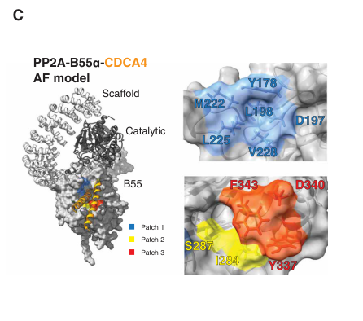

CDC55 encodes the B-type (PR55/B55) regulatory subunit of protein phosphatase 2A in Saccharomyces cerevisiae, the orthologue of human PPP2R2A/B55-alpha. It is a seven-WD40-repeat beta-propeller that has no catalytic centre of its own and assembles with the scaffold subunit Tpd3 and either of the catalytic subunits Pph21 or Pph22 to form the PP2A-Cdc55 holoenzyme, one of only two PP2A heterotrimers in yeast (the other, with the B'-type subunit Rts1, is 10-14-fold more abundant). Cdc55 recruits and positions phosphoserine/phosphothreonine substrates for the catalytic subunit, sets where and when the holoenzyme acts, and is the subunit through which the physiological regulators of PP2A-Cdc55 operate: the Zds1 and Zds2 proteins bind Cdc55 directly and retain it in the cytoplasm and at the bud cortex and neck; separase (Esp1) and Zds1/Zds2 down-regulate it at anaphase onset; and the endosulfines Igo1 and Igo2, once phosphorylated by the Greatwall-related kinase Rim15 when TORC1 and PKA signalling fall, bind and inhibit it. PP2A-Cdc55 chiefly opposes Cdk1 (Cdc28)- and Polo (Cdc5)-dependent phosphorylation. In G2 the cytoplasmic pool promotes mitotic entry, unlike its metazoan counterpart, by dephosphorylating and activating the Cdc25-like phosphatase Mih1 and by opposing Swe1, so that cells lacking Cdc55 accumulate Tyr19-phosphorylated Cdk1 and delay G2/M with elongated buds. In metaphase the nuclear pool keeps the Cdc14 inhibitor Net1 underphosphorylated, retaining Cdc14 in the nucleolus until the separase-dependent inactivation of PP2A-Cdc55 at anaphase onset allows Cdc14 release through the FEAR network; it likewise keeps APC-Cdc20 dephosphorylated, and these activities make Cdc55 a negative regulator of mitotic exit that is essential for sustaining spindle-assembly-checkpoint arrest. PP2A-Cdc55 also dephosphorylates the N-terminus of Cdc6 during mitosis in preparation for origin licensing, contributes to reductional chromosome segregation in meiosis I, and, as a TORC1-downstream phosphatase, acts on Tap42, Atg13 and the ESCRT-0 machinery to support quiescence entry, autophagy induction and microautophagy after nutrient limitation, and sustains Msn2/Msn4-driven stress transcription. The protein is found in the nucleus and cytoplasm throughout the cell cycle, at the bud tip and mating-projection tip during polarised growth, at the bud neck in late mitosis and on the vacuolar membrane; cdc55 null mutants are viable but cold-sensitive, with abnormal morphology, cytokinesis defects and checkpoint failure.
| GO Term | Evidence | Action | Reason |
|---|---|---|---|
|
GO:0000159
protein phosphatase type 2A complex
|
IBA
GO_REF:0000033 |
ACCEPT |
Summary: PAINT-inferred membership of the heterotrimeric PP2A holoenzyme for the PR55/B55 family. In budding yeast Cdc55 is the B-type subunit that assembles with the Tpd3 scaffold and the Pph21/Pph22 catalytic subunits, one of only two regulatory subunits (with Rts1) in this organism.
Reason: Holoenzyme membership is the defining, family-wide property of B55 subunits and the node placement is sound: every extant descendant with experimental data (human PPP2R2A, Drosophila tws, mouse Ppp2r2a/Ppp2r2d, S. pombe pab1, Dictyostelium) is a PP2A B subunit, and the S. cerevisiae protein has its own experimental evidence for the term (co-purification with Tpd3 and the catalytic subunit, competition of Tap42 with Cdc55/Tpd3 for the C subunit, and the Complex Portal entry). SGD:S000003158 appearing in the WITH/FROM list is the expected marker of that experimental grounding, not circularity. Core function.
Propagation Review
Root cause:
NO FAILURE CORE
Sources checked:
PANTHER:PTN000221745
SUPPORTS TRANSFER
Ancestral PR55/B55 node; holoenzyme assembly through the WD40 propeller and beta-hairpin arm is architecturally conserved across the family with no evidence of loss in the yeast lineage.
SGD:S000003158
· CDC55
SUPPORTS TRANSFER
The target itself carries IDA/IMP/IPI evidence for the term; its presence among the descendant evidences is expected.
UniProtKB:P63151
· PPP2R2A
SUPPORTS TRANSFER
Human B55-alpha has a crystal structure of the A-B55-C trimer; the orthologous relationship with Cdc55 is unambiguous.
Supporting Evidence:
PMID:17550305
deletion of PPE1 in an rrd1Δ/rrd2Δ strain increases holoenzyme assembly with the B-type subunit CDC55 without generation of the active C subunit
PMID:10329624
phosphorylated Tap42 effectively competes with Cdc55/Tpd3 for binding to the phosphatase 2A catalytic subunit
file:yeast/CDC55/CDC55-deep-research-falcon.md
Pph21/Pph22 supply the metal-dependent catalytic activity, while Cdc55 governs substrate engagement and localization.
|
|
GO:0000159
protein phosphatase type 2A complex
|
IDA
PMID:8600023 A ceramide-activated protein phosphatase mediates ceramide-i... |
ACCEPT |
Summary: Cdc55 was purified as a regulatory subunit (with Tpd3) of a ceramide-activated protein phosphatase; the paper assigned the catalytic partner to Sit4 rather than Pph21/Pph22.
Reason: The direct evidence is that Cdc55 co-purifies with the PP2A A subunit Tpd3 in a heterotrimeric phosphatase, which is what the term asserts. The specific claim that the catalytic subunit in this preparation is Sit4 (a PP6-type catalytic subunit) has not been the mainstream view since; later biochemical work identifies Pph21/Pph22 as the catalytic partners of Tpd3-Cdc55, and Cdc55 and Tpd3 compete with Tap42 for the PP2A catalytic subunit. The term itself (PP2A holoenzyme membership) is beyond doubt on the totality of evidence, so the row is accepted with that caveat noted.
Supporting Evidence:
PMID:8600023
yeast cells contain a ceramide-activated protein phosphatase composed of regulatory subunits encoded by TPD3 and CDC55 and a catalytic subunit encoded by SIT4
PMID:17550305
deletion of PPE1 in an rrd1Δ/rrd2Δ strain increases holoenzyme assembly with the B-type subunit CDC55 without generation of the active C subunit
PMID:10329624
phosphorylated Tap42 effectively competes with Cdc55/Tpd3 for binding to the phosphatase 2A catalytic subunit
|
|
GO:0000159
protein phosphatase type 2A complex
|
IEA
GO_REF:0000120 |
ACCEPT |
Summary: Automated assignment from the InterPro PP2A_PR55 signature (IPR000009) and ARBA, placing Cdc55 in the PP2A complex.
Reason: An electronic call that is exactly right: the PR55 signature identifies the protein as a PP2A B subunit and the yeast protein has direct biochemical evidence for holoenzyme assembly with Tpd3 and Pph21/Pph22.
Propagation Review
Root cause:
NO FAILURE CORE
Sources checked:
InterPro:IPR000009
· PP2A_PR55
SUPPORTS TRANSFER
Family signature specific to B55/PR55 regulatory subunits; the mapping to the PP2A complex term is appropriate for every member.
Supporting Evidence:
PMID:17550305
deletion of PPE1 in an rrd1Δ/rrd2Δ strain increases holoenzyme assembly with the B-type subunit CDC55 without generation of the active C subunit
PMID:10329624
phosphorylated Tap42 effectively competes with Cdc55/Tpd3 for binding to the phosphatase 2A catalytic subunit
|
|
GO:0000159
protein phosphatase type 2A complex
|
IMP
PMID:8600023 A ceramide-activated protein phosphatase mediates ceramide-i... |
ACCEPT |
Summary: Mutation of CDC55 (like TPD3 and the catalytic-subunit gene) renders cells resistant to ceramide-induced G1 arrest, used here as genetic evidence that Cdc55 is a subunit of the ceramide-activated phosphatase.
Reason: A mutant phenotype is weak evidence for a cellular-component term on its own, but it is consistent with the co-purification data in the same paper and with all later work on the Tpd3-Cdc55-Pph21/22 holoenzyme, so the term is correct. The same caveat as for the IDA row applies to the paper's assignment of Sit4 as the catalytic subunit.
Supporting Evidence:
PMID:8600023
Because mutation of any one of these three genes renders strains resistant to ceramide inhibition
PMID:8600023
yeast cells contain a ceramide-activated protein phosphatase composed of regulatory subunits encoded by TPD3 and CDC55 and a catalytic subunit encoded by SIT4
|
|
GO:0000159
protein phosphatase type 2A complex
|
IPI
PMID:10329624 Tor proteins and protein phosphatase 2A reciprocally regulat... |
ACCEPT |
Summary: Complex Portal-curated membership of the PP2A holoenzyme, from the demonstration that Cdc55 and Tpd3 regulate Pph21/22 and that phosphorylated Tap42 competes with Cdc55/Tpd3 for binding to the catalytic subunit.
Reason: Direct evidence that Cdc55 is a subunit of the Tpd3-Pph21/22 holoenzyme and that this assembly is in competition with the Tap42-Pph21/22 dimer downstream of TOR; this row is also the origin of the TOR-pathway connection developed by later autophagy and quiescence studies.
Supporting Evidence:
PMID:10329624
We show that inactivation of either Cdc55 or Tpd3, which regulate Pph21/22 activity, results in rapamycin resistance and that this resistance correlates with an increased association of Tap42 with Pph21/22.
PMID:10329624
phosphorylated Tap42 effectively competes with Cdc55/Tpd3 for binding to the phosphatase 2A catalytic subunit
|
|
GO:0000329
fungal-type vacuole membrane
|
IDA
PMID:12388751 Localization of Saccharomyces cerevisiae protein phosphatase... |
KEEP AS NON CORE |
Summary: A functional GFP-Cdc55 fusion colocalises with the FM4-64 vacuolar-membrane stain at all cell-cycle stages; a weaker Tpd3 signal at the vacuole was also seen.
Reason: The localisation is real and reproducible (Zds1 overexpression enhances the vacuolar-membrane pool, and PP2A-Cdc55 later proved to be required for ESCRT-0 recruitment to vacuolar membranes during microautophagy), but it is a minor pool relative to the nuclear and cytoplasmic pools through which the characterised mitotic functions are executed. Kept as a non-core location.
Supporting Evidence:
PMID:12388751
When GFP-CDC55 cells were stained with FM4-64, GFP-Cdc55p colocalized with the stain in cells in all cell cycle stages
PMID:32029270
Loss of PP2A-Cdc55 compromised vacuolar localization of Hse1, but not Vps27.
|
|
GO:0000705
achiasmate meiosis I
|
IGI
PMID:27455870 PP2A(Cdc55)'s role in reductional chromosome segregation dur... |
MODIFY |
Summary: cdc55 'monopolin-class' alleles (cdc55-MP) were isolated as suppressors of spo11Δ spo12Δ lethality and affect reductional segregation of sister centromeres when recombination is absent, independently of the FEAR-related function of PP2A-Cdc55; they have no effect in a wild-type (chiasmate) meiosis.
Reason: The underlying finding is sound and the IGI with SPO11/SPO12 is exactly what the paper did. The term, however, describes a meiosis that occurs 'in the constitutive absence of chiasmata' (e.g. Drosophila male meiosis); a spo11Δ background is an experimentally imposed, not constitutive, loss of chiasmata, so S. cerevisiae is outside the intended scope of the term. What the genetics actually reveals is a contribution of PP2A-Cdc55 to reductional (homologous) chromosome segregation in meiosis I that is normally masked by chiasmata, which is captured by the sibling GO:0045143 row from the same paper; the replacement therefore points at that term rather than at an organism-level meiosis type.
Proposed replacements:
homologous chromosome segregation
Supporting Evidence:
PMID:27455870
We suggest that Cdc55 is required for reductional chromosome segregation during achiasmate meiosis and this is independent of its FEAR function.
PMID:27455870
Although the suppressor mutations in cdc55 affect reductional chromosome segregation in the absence of recombination, they have no effect on chromosome segregation during wild type meiosis.
|
|
GO:0001100
negative regulation of exit from mitosis
|
IMP
PMID:16314395 The role of Cdc55 in the spindle checkpoint is through regul... |
ACCEPT |
Summary: cdc55Δ cells prematurely release Cdc14 from the nucleolus during spindle-checkpoint activation, degrade Pds1 and lose cohesion with bub2Δ-like kinetics, and cdc55Δ suppresses lte1 spo12 synthetic lethality: Cdc55 is a negative regulator of mitotic exit acting downstream or independently of Cdc15.
Reason: This is the best-established core role of PP2A-Cdc55 in budding yeast and is mechanistically explained by the Queralt/Uhlmann work: PP2A-Cdc55 keeps the Cdc14 inhibitor Net1 underphosphorylated in metaphase until separase (with Zds1/Zds2) downregulates it at anaphase onset, and nuclear-restricted Cdc55 blocks Cdc14 release. Core function.
Supporting Evidence:
PMID:16314395
We show that Cdc55 is a negative regulator of mitotic exit.
PMID:16314395
A cdc55 mutant, like a bub2 mutant, prematurely releases Cdc14 phosphatase from the nucleolus during spindle checkpoint activation
PMID:16713564
Here, we show that PP2A(Cdc55) phosphatase keeps Net1 underphosphorylated in metaphase.
PMID:16713564
The sister chromatid-separating protease separase, activated at anaphase onset, interacts with and downregulates PP2A(Cdc55), thereby facilitating Cdk-dependent Net1 phosphorylation.
PMID:21536748
On the other hand, nuclear Cdc55 prevents mitotic exit.
|
|
GO:0005515
protein binding
|
IPI
PMID:11805826 Functional organization of the yeast proteome by systematic ... |
REMOVE |
Summary: Cdc55 recovered with the type I myosin Myo5 in the Cellzome TAP-MS survey of yeast protein complexes.
Reason: A high-throughput affinity-purification survey; the Cdc55-Myo5 pairing has no established functional consequence and does not resolve to a more informative molecular function for Cdc55, although a cortical PP2A-Cdc55 pool near actin structures is plausible. Bare "protein binding" carries no functional information about Cdc55, so the row is removed per repository curation policy; removal does not question the reported interaction, which remains recorded in IntAct and in the UniProt INTERACTION section.
Supporting Evidence:
PMID:11805826
We used tandem-affinity purification (TAP) and mass spectrometry in a large-scale approach to characterize multiprotein complexes in Saccharomyces cerevisiae.
|
|
GO:0005515
protein binding
|
IPI
PMID:16429126 Proteome survey reveals modularity of the yeast cell machine... |
REMOVE |
Summary: Cdc55-Myo5 interaction recorded again in the genome-wide affinity-purification/mass-spectrometry screen for yeast complexes.
Reason: Same interaction and same limitation as the 2002 Cellzome row: a proteome-scale co-purification without functional follow-up cannot support a specific molecular-function term for Cdc55. Bare "protein binding" carries no functional information about Cdc55, so the row is removed per repository curation policy; removal does not question the reported interaction, which remains recorded in IntAct and in the UniProt INTERACTION section.
Supporting Evidence:
PMID:16429126
Here we report the first genome-wide screen for complexes in an organism, budding yeast, using affinity purification and mass spectrometry.
|
|
GO:0005515
protein binding
|
IPI
PMID:16713564 Downregulation of PP2A(Cdc55) phosphatase by separase initia... |
REMOVE |
Summary: Co-immunoprecipitation of Cdc55 with separase (Esp1) in the study showing that separase downregulates PP2A-Cdc55 at anaphase onset to permit Net1 phosphorylation and Cdc14 release.
Reason: The interaction is biologically important, but it records Cdc55 being the target of a regulator (separase inhibits the holoenzyme) rather than an activity of Cdc55; the functional content of this paper is already captured by the negative-regulation-of-mitotic-exit row (GO:0001100) and the regulator-activity rows. Bare "protein binding" carries no functional information about Cdc55, so the row is removed per repository curation policy; removal does not question the reported interaction, which remains recorded in IntAct and in the UniProt INTERACTION section.
Supporting Evidence:
PMID:16713564
The sister chromatid-separating protease separase, activated at anaphase onset, interacts with and downregulates PP2A(Cdc55), thereby facilitating Cdk-dependent Net1 phosphorylation.
PMID:16713564
Here, we show that PP2A(Cdc55) phosphatase keeps Net1 underphosphorylated in metaphase.
|
|
GO:0005515
protein binding
|
IPI
PMID:18762578 Separase cooperates with Zds1 and Zds2 to activate Cdc14 pho... |
REMOVE |
Summary: Separase-Cdc55 co-immunoprecipitation shown to be independent of Zds1/Zds2, in the study identifying Zds1/Zds2 as separase-cooperating PP2A-Cdc55 inhibitors that promote Cdc14 activation in early anaphase.
Reason: As for the 2006 row, the interaction describes regulatory input onto PP2A-Cdc55 (separase and Zds1/Zds2 downregulate it) and is fully represented, with functional meaning, by the mitotic-exit rows. Bare "protein binding" carries no functional information about Cdc55, so the row is removed per repository curation policy; removal does not question the reported interaction, which remains recorded in IntAct and in the UniProt INTERACTION section.
Supporting Evidence:
PMID:18762578
Therefore separase interacts with Cdc55 independently of Zds1 and Zds2.
PMID:18762578
Ectopic Zds1 expression in turn is sufficient to down-regulate PP2A(Cdc55) and promote Net1 phosphorylation.
|
|
GO:0005515
protein binding
|
IPI
PMID:19841731 Bayesian modeling of the yeast SH3 domain interactome predic... |
REMOVE |
Summary: IntAct-curated Cdc55-Myo5 interaction from the yeast SH3-domain interactome study (peptide phage display, peptide arrays and Bayesian network modelling); Cdc55 is not discussed in the main text.
Reason: A predicted/screen-level SH3-ligand interaction from a proteome-wide dataset, with no Cdc55-specific follow-up; it does not identify a molecular function for Cdc55. Bare "protein binding" carries no functional information about Cdc55, so the row is removed per repository curation policy; removal does not question the reported interaction, which remains recorded in IntAct and in the UniProt INTERACTION section.
Supporting Evidence:
PMID:19841731
We used peptide phage display to conduct a large-scale analysis of yeast SH3 domain specificity.
|
|
GO:0005634
nucleus
|
IDA
PMID:12388751 Localization of Saccharomyces cerevisiae protein phosphatase... |
ACCEPT |
Summary: A fully functional, chromosomally integrated GFP-Cdc55 fusion is nuclear in more than 90% of cells at all cell-cycle stages, and this localisation does not depend on the A or C subunit.
Reason: The nuclear pool is where PP2A-Cdc55 executes its core mitotic functions: it keeps Net1 underphosphorylated to retain Cdc14 in the nucleolus, and nuclear Cdc55 is essential for the spindle assembly checkpoint. Core location.
Supporting Evidence:
PMID:12388751
GFP-Cdc55p localized to the nucleus in >90% of all cells
PMID:12388751
Cdc55p achieved its normal localization in the absence of either an A or C subunit
PMID:21536748
On the other hand, nuclear Cdc55 prevents mitotic exit.
PMID:23886942
we further show that nuclear Cdc55 is essential for the SAC
|
|
GO:0005634
nucleus
|
IMP
PMID:23886942 Nuclear PP2A-Cdc55 prevents APC-Cdc20 activation during the ... |
ACCEPT |
Summary: SAC-specific cdc55 alleles and forced nucleocytoplasmic redistribution of Cdc55 show that the nuclear pool of PP2A-Cdc55 is the one that is active in the spindle assembly checkpoint (is_active_in nucleus).
Reason: Direct functional evidence that Cdc55 acts in the nucleus, consistent with the GFP localisation and with the nuclear-restricted cdc55-NLS allele that blocks Cdc14 release. Core location.
Supporting Evidence:
PMID:23886942
we further show that nuclear Cdc55 is essential for the SAC
PMID:23886942
APC-Cdc20 is kept inactive by dephosphorylation by nuclear PP2A-Cdc55 when spindle is damaged
PMID:21536748
On the other hand, nuclear Cdc55 prevents mitotic exit.
|
|
GO:0005737
cytoplasm
|
IDA
PMID:21536748 Spatial regulation of Cdc55-PP2A by Zds1/Zds2 controls mitot... |
ACCEPT |
Summary: Endogenously tagged Cdc55-GFP is found in the cytoplasm as well as the nucleus; the cytoplasmic and cortical pool depends on Zds1/Zds2 and is the pool that promotes mitotic entry.
Reason: The cytoplasmic localisation is functionally validated by the cdc55-NES allele, which is fully competent for mitotic entry and bypasses the requirement for Zds1/Zds2, and by the swe1Δ suppression showing that the cytoplasmic pool acts on the Swe1/Mih1 axis. Core location.
Supporting Evidence:
PMID:21536748
Cortical and cytoplasmic localization of Cdc55 requires Zds1/Zds2, and Cdc55 accumulates in the nucleus in the absence of Zds1/Zds2.
PMID:21536748
we showed that Cdc55 promotes mitotic entry when in the cytoplasm
PMID:21536748
When bound to Zds1/Zds2, Cdc55 functions in the cytoplasm to promote mitotic entry by activating the Cdk.
|
|
GO:0005829
cytosol
|
IBA
GO_REF:0000033 |
ACCEPT |
Summary: PAINT-inferred cytosolic activity for the B55 family, seeded from Drosophila twins and the ancestral node.
Reason: The inference is consistent with the direct yeast evidence: Cdc55 has a Zds1/Zds2-dependent cytoplasmic pool, the constitutively cytoplasmic cdc55-NES allele supports mitotic entry, and the Swe1-inactivating machinery it acts on is cytoplasmic. Cytosol is the appropriate active-in compartment for that pool alongside the nuclear pool that carries the mitotic-exit and checkpoint functions.
Propagation Review
Root cause:
NO FAILURE CORE
Sources checked:
PANTHER:PTN000221745
SUPPORTS TRANSFER
Ancestral B55 node; a cytosolic pool of the holoenzyme is shared by yeast, fly and human B55 subunits.
FB:FBgn0004889
· tws
SUPPORTS TRANSFER
Drosophila twins/B55 is a cytosolic PP2A regulatory subunit; yeast Cdc55 has its own cytoplasmic pool with a demonstrated function in mitotic entry.
Supporting Evidence:
PMID:21536748
Cortical and cytoplasmic localization of Cdc55 requires Zds1/Zds2, and Cdc55 accumulates in the nucleus in the absence of Zds1/Zds2.
PMID:21536748
we showed that Cdc55 promotes mitotic entry when in the cytoplasm
|
|
GO:0005934
cellular bud tip
|
IDA
PMID:12388751 Localization of Saccharomyces cerevisiae protein phosphatase... |
KEEP AS NON CORE |
Summary: GFP-Cdc55 concentrates at the bud tip from the smallest visible buds through medium-budded cells, and Tpd3 requires Cdc55 for its own bud-tip accumulation.
Reason: A genuine, cell-cycle-regulated cortical pool: Cdc55 recruits the scaffold subunit to the bud tip, the Zds1/Zds2 proteins that anchor Cdc55 in the cytoplasm are themselves bud-cortex proteins, and cdc55 mutants have polarised-growth and morphogenesis defects. The functional consequence at this site is not resolved at the substrate level, so it is kept as a non-core location.
Supporting Evidence:
PMID:12388751
GFP-Cdc55p localized to the bud tip of the smallest visible buds, to the bud tip of small/medium budded cells, and to some buds that were nearly as large as the mother
PMID:12388751
Most strikingly, in cdc55Δ cells, GFP-Tpd3p was rarely found at bud tips, being seen in <5% of small/medium budded cells compared with 70% in wild-type cells
|
|
GO:0005935
cellular bud neck
|
IDA
PMID:12388751 Localization of Saccharomyces cerevisiae protein phosphatase... |
KEEP AS NON CORE |
Summary: GFP-Cdc55 localises to the bud neck in about half of post-telophase cells, progressing from the daughter side to single and double rings and to the new cell wall, mirroring Tpd3.
Reason: The late-mitotic bud-neck pool is consistent with the cytokinesis and septation defects of cdc55 mutants and with the bud-neck localisation of Zds1/Zds2, but the substrates acted on there are not defined, so it is a non-core location.
Supporting Evidence:
PMID:12388751
It also localized to the bud neck (Figure 4 A, open arrowheads) in 53% of post-telophase cells
|
|
GO:0010971
positive regulation of G2/M transition of mitotic cell cycle
|
IMP
PMID:21536748 Spatial regulation of Cdc55-PP2A by Zds1/Zds2 controls mitot... |
ACCEPT |
Summary: cdc55Δ, zds1Δ zds2Δ and nuclear-restricted cdc55-NLS cells show a Swe1-dependent G2 delay with elongated buds and accumulate Tyr19-phosphorylated Cdc28, whereas cytoplasmic cdc55-NES is fully competent for mitotic entry: cytoplasmic PP2A-Cdc55 promotes mitotic entry by opposing Swe1 and activating Mih1.
Reason: In budding yeast, unlike metazoa, PP2A-Cdc55 promotes rather than prevents mitotic entry, feeding the positive feedback loop of Cdk1 activation through Mih1 dephosphorylation/activation and by opposing the initial Cdk1 phosphorylation of Swe1; the term's definition (a pathway that activates a cell-cycle CDK at the G2/M switch) fits this precisely. Core function.
Supporting Evidence:
PMID:21536748
we showed that Cdc55 promotes mitotic entry when in the cytoplasm
PMID:21536748
Our genetic data suggest that the critical target of Cdc55 in mitotic entry is Swe1 because mitotic entry defects of cdc55Δ, zds1Δ zds2Δ, and cdc55-NLS are almost fully rescued by deletion of SWE1.
PMID:23861665
In stark contrast to other organisms, budding yeast PP2ACdc55 promotes, rather than prevents, timely entry into mitosis by participating in the positive feedback loop for Cdk1 activation
PMID:23861665
In addition, PP2ACdc55 dephosphorylates and activates Mih1
|
|
GO:0010972
negative regulation of G2/M transition of mitotic cell cycle
|
IEA
GO_REF:0000117 |
MODIFY |
Summary: ARBA machine-learning transfer of the metazoan B55 role in restraining mitotic entry (PP2A-B55 dephosphorylates Cdk1 substrates and is inhibited by Greatwall-phosphorylated endosulfines at mitotic entry).
Reason: The sign of this transfer is wrong for budding yeast. The experimental literature is explicit that PP2A-Cdc55 promotes, rather than prevents, timely entry into mitosis, by dephosphorylating and activating Mih1 and by opposing Swe1 activation; cdc55Δ cells accumulate Tyr19-phosphorylated Cdk1 and delay G2/M. The only sense in which Cdc55 restrains entry is as the Zds1/Zds2-controlled component required for the Swe1-dependent morphogenesis-checkpoint delay (the IGI rows below), a context-dependent effect that is not what the ARBA rule is describing. Rather than remove the row outright, it is generalised to the sign-neutral parent so that the machine annotation stops asserting the metazoan direction; the positive-regulation IMP row remains the core statement.
Propagation Review
Root cause:
PROPAGATION BAD
Failure modes:
REGULATORY SIGN INVERSION
LINEAGE OR TAXON MISMATCH
Sources checked:
ARBA:ARBA00084549
SUPPORTS SOURCE BUT NOT TARGET
The rule generalises the metazoan PP2A-B55 behaviour (restraint of mitotic entry, relieved by cyclin B-CDK1 and Greatwall-ENSA) to the family; in S. cerevisiae the endosulfine-PP2A-Cdc55 module is wired the other way, with PP2A-Cdc55 promoting Cdk1 activation.
Proposed replacements:
regulation of G2/M transition of mitotic cell cycle
Supporting Evidence:
PMID:23861665
In stark contrast to other organisms, budding yeast PP2ACdc55 promotes, rather than prevents, timely entry into mitosis by participating in the positive feedback loop for Cdk1 activation
PMID:23861665
In addition, PP2ACdc55 dephosphorylates and activates Mih1
PMID:21536748
we showed that Cdc55 promotes mitotic entry when in the cytoplasm
PMID:21536748
Our genetic data suggest that the critical target of Cdc55 in mitotic entry is Swe1 because mitotic entry defects of cdc55Δ, zds1Δ zds2Δ, and cdc55-NLS are almost fully rescued by deletion of SWE1.
|
|
GO:0016237
microautophagy
|
IMP
PMID:32029270 PP2A promotes ESCRT-0 complex formation on vacuolar membrane... |
KEEP AS NON CORE |
Summary: After TORC1 inactivation, loss of PP2A-Cdc55 compromises vacuolar recruitment of the ESCRT-0 subunit Hse1 (but not Vps27) and impairs microautophagy induction.
Reason: PP2A-Cdc55 acts here as a TORC1-downstream phosphatase that licenses ESCRT-0 assembly on the vacuolar membrane; it is an upstream regulatory input rather than part of the membrane-deformation machinery of microautophagy itself, but GO has no regulation-of-microautophagy child to move it to. The cached record is abstract-only and the SGD curator read the full text, so the term is kept and graded non-core (nutrient-signalling branch of PP2A-Cdc55 function).
Supporting Evidence:
PMID:32029270
Here, we show that the TORC1-downstream protein phosphatase PP2A-Cdc55 is important for these events after TORC1 inactivation in budding yeast.
PMID:32029270
Loss of PP2A-Cdc55 compromised vacuolar localization of Hse1, but not Vps27.
|
|
GO:0019888
protein phosphatase regulator activity
|
IBA
GO_REF:0000033 |
ACCEPT |
Summary: PAINT-inferred protein phosphatase regulator activity for the PR55/B55 family: the B subunit has no catalytic centre and instead determines the substrate specificity, localisation and inhibitor sensitivity of the PP2A holoenzyme.
Reason: This is the correct molecular-function statement for Cdc55 and the node placement is sound across the family. In yeast, Cdc55 confers histone H1/Net1-directed activity on the holoenzyme, is the subunit through which Rim15-phosphorylated Igo1/Igo2, separase and Zds1/Zds2 regulate the enzyme, and is required for the phosphatase to be targeted to its cortical, cytoplasmic and nuclear sites of action. Core molecular function.
Propagation Review
Root cause:
NO FAILURE CORE
Sources checked:
PANTHER:PTN000221745
SUPPORTS TRANSFER
Ancestral B55 node; regulatory-subunit activity is the family-defining function.
SGD:S000003158
· CDC55
SUPPORTS TRANSFER
The target carries its own IGI evidence for this term; expected marker of experimental grounding.
Supporting Evidence:
PMID:17550305
The B-type subunits are responsible for the substrate specificity and intracellular localization of the PP2A holoenzymes.
PMID:23861665
Phosphorylated Igo1 inhibits PP2A(Cdc55) activity in vitro and induces mitotic entry in Xenopus egg extracts
PMID:23861665
Here we show that budding yeast endosulfines (Igo1 and Igo2) bind to PP2A(Cdc55) in a cell cycle-regulated manner upon Greatwall (Rim15)-dependent phosphorylation.
file:yeast/CDC55/CDC55-deep-research-falcon.md
Pph21/Pph22 supply the metal-dependent catalytic activity, while Cdc55 governs substrate engagement and localization.
|
|
GO:0019888
protein phosphatase regulator activity
|
IEA
GO_REF:0000120 |
ACCEPT |
Summary: InterPro/ARBA automated assignment of protein phosphatase regulator activity from the PP2A_PR55 signature.
Reason: Correct: the PR55 family signature identifies a non-catalytic PP2A regulatory subunit, and the yeast protein has genetic and biochemical evidence for the same activity.
Supporting Evidence:
PMID:17550305
The B-type subunits are responsible for the substrate specificity and intracellular localization of the PP2A holoenzymes.
PMID:23861665
Phosphorylated Igo1 inhibits PP2A(Cdc55) activity in vitro and induces mitotic entry in Xenopus egg extracts
|
|
GO:0019888
protein phosphatase regulator activity
|
IGI
PMID:17550305 Generation of active protein phosphatase 2A is coupled to ho... |
ACCEPT |
Summary: A cdc55Δ rts1Δ double mutant lacking both yeast B-type subunits was used, alongside tpd3Δ and rrd1Δ rrd2Δ, to dissect how active and substrate-specific PP2A is generated; B-subunit assembly with Cdc55 is coupled to Rrd2/Tpd3-dependent maturation of the catalytic subunit.
Reason: The paper's headline concerns Rrd2 and Tpd3, but the full text assays holoenzyme composition with anti-Cdc55 antibodies and uses the B-subunit-less double mutant as a comparator, which is a legitimate IGI basis for Cdc55 (with Rts1) regulating PP2A activity. Consistent with all other evidence for the term.
Supporting Evidence:
PMID:17550305
a cdc55Δ/rts1Δ strain, which lacks the known B-type subunits of yeast
PMID:17550305
deletion of PPE1 in an rrd1Δ/rrd2Δ strain increases holoenzyme assembly with the B-type subunit CDC55 without generation of the active C subunit
PMID:17550305
Complex formation with the regulatory A and B-type subunits suppresses nonspecific C subunit activity, but increases the substrate affinity
|
|
GO:0043332
mating projection tip
|
IDA
PMID:12388751 Localization of Saccharomyces cerevisiae protein phosphatase... |
KEEP AS NON CORE |
Summary: In pheromone-treated cells GFP-Cdc55 accumulates as a crescent at the shmoo tip, as does Tpd3; tpd3Δ cells form abnormal mating projections.
Reason: A real localisation that parallels the bud-tip pool during polarised growth; the mating-projection role is a context-specific extension of the polarity-site localisation rather than a core function, and no substrate at this site is defined.
Supporting Evidence:
PMID:12388751
GFP-Cdc55p also localized to the shmoo tip in a pattern identical to that shown by Tpd3p
|
|
GO:0044818
mitotic G2/M transition checkpoint
|
IGI
PMID:20980617 Zds2p regulates Swe1p-dependent polarized cell growth in Sac... |
KEEP AS NON CORE |
Summary: Deletion of CDC55 rescues the Swe1-dependent elongated-bud phenotype of zds1Δ zds2Δ cells, and galactose-induced ZDS2 cannot drive mitosis past an actin-perturbation (cdc24-1) checkpoint arrest without CDC55; Zds2 binds Cdc55 directly through its C-terminal ZH4 domain.
Reason: The genetics genuinely place Cdc55 in the Swe1-dependent morphogenesis checkpoint circuit: the checkpoint delay of zds1Δ zds2Δ requires CDC55 and the Zds proteins act on the checkpoint through Cdc55. The sign, however, is context-dependent. In the same circuit PP2A-Cdc55 is the phosphatase that dephosphorylates and activates Mih1 and opposes Swe1, i.e. it normally promotes the G2/M transition, and the later Rossio/Yoshida work explains the zds1Δ zds2Δ phenotype by mislocalisation of Cdc55 to the nucleus. Cdc55 is therefore better understood as the Zds-regulated effector on the Swe1/Mih1 axis than as a checkpoint sensor. The curator's reading of the genetic data is defensible and the full text was read, so the row is kept, but graded non-core; the positive-regulation IMP row is the core statement of this function.
Supporting Evidence:
PMID:20980617
deletion of CDC55 rescues the aberrant bud morphology of a zds1Δzds2Δ strain
PMID:20980617
This negative regulation requires the CDC55 gene.
PMID:20980617
ZH4 is shown by protein affinity assays to be necessary and sufficient for interaction with Cdc55p, a regulatory subunit of protein phosphatase 2A (PP2A).
PMID:23861665
In stark contrast to other organisms, budding yeast PP2ACdc55 promotes, rather than prevents, timely entry into mitosis by participating in the positive feedback loop for Cdk1 activation
|
|
GO:0044818
mitotic G2/M transition checkpoint
|
IGI
PMID:20980617 Zds2p regulates Swe1p-dependent polarized cell growth in Sac... |
KEEP AS NON CORE |
Summary: Same experiments as the ZDS2 row, with ZDS1 as the interacting gene: cdc55Δ suppresses the zds1Δ zds2Δ checkpoint-dependent bud elongation and GAL-ZDS1 cannot override the Swe1 checkpoint in a cdc55Δ background.
Reason: As for the ZDS2 row: the requirement for CDC55 in the Zds-regulated Swe1 checkpoint response is real, but PP2A-Cdc55 normally promotes G2/M through Mih1/Swe1, and the checkpoint-delay phenotype reflects Cdc55 mislocalised to the nucleus in the absence of Zds1/Zds2. Kept, non-core.
Supporting Evidence:
PMID:20980617
deletion of CDC55 rescues the aberrant bud morphology of a zds1Δzds2Δ strain
PMID:20980617
This negative regulation requires the CDC55 gene.
PMID:21536748
Cortical and cytoplasmic localization of Cdc55 requires Zds1/Zds2, and Cdc55 accumulates in the nucleus in the absence of Zds1/Zds2.
|
|
GO:0045143
homologous chromosome segregation
|
IGI
PMID:27455870 PP2A(Cdc55)'s role in reductional chromosome segregation dur... |
KEEP AS NON CORE |
Summary: cdc55-MP alleles impair reductional segregation of sister centromeres in spo11Δ spo12Δ (achiasmate) meiosis, an effect separable from the FEAR-related function of PP2A-Cdc55, without affecting segregation in a wild-type meiosis.
Reason: A meiosis-specific contribution to homologue (reductional) segregation that is only revealed in the absence of recombination; the molecular mechanism (candidates include sister-kinetochore mono-orientation or centromeric cohesion protection) is not defined. Biologically genuine but peripheral to the core mitotic and nutrient-signalling functions of the holoenzyme.
Supporting Evidence:
PMID:27455870
We suggest that Cdc55 is required for reductional chromosome segregation during achiasmate meiosis and this is independent of its FEAR function.
PMID:27455870
Although the suppressor mutations in cdc55 affect reductional chromosome segregation in the absence of recombination, they have no effect on chromosome segregation during wild type meiosis.
|
|
GO:0061586
positive regulation of transcription by transcription factor localization
|
IMP
PMID:23275436 Yeast protein phosphatase 2A-Cdc55 regulates the transcripti... |
KEEP AS NON CORE |
Summary: PP2A-Cdc55 (not PP2A-Rts1) is required for full induction of Msn2/4-dependent stress genes: it sustains nuclear accumulation of Msn2 and Msn4 during hyperosmotic stress and enhances Msn2 chromatin recruitment, without altering Hog1 signalling or the stress-induced dephosphorylation of the mapped Msn2 sites.
Reason: The term fits the data (transcriptional activation through transcription-factor localisation/retention), and the phenotype is specific to Cdc55 and to Msn2/4-driven promoters. The mechanism is indirect (Msn2 itself is not detectably a PP2A-Cdc55 substrate at the sites examined), and the stress-transcription role is a secondary output of the nutrient/stress branch of PP2A-Cdc55 function rather than a core function, so it is kept as non-core.
Supporting Evidence:
PMID:23275436
We show that PP2A-Cdc55 contributes to sustained nuclear accumulation of Msn2 and Msn4 during hyperosmolarity stress.
PMID:23275436
PP2A-Cdc55 also enhances Msn2-dependent transactivation, required for extended chromatin recruitment of the transcription factor.
PMID:23275436
Thus, based on our analyses, the initial dephosphorylation of Msn2 is not controlled by PP2A-Cdc55.
|
|
GO:0071475
cellular hyperosmotic salinity response
|
IMP
PMID:23275436 Yeast protein phosphatase 2A-Cdc55 regulates the transcripti... |
KEEP AS NON CORE |
Summary: cdc55Δ cells show reduced hyperosmotic (NaCl) induction of many Msn2/4 target genes, while Msn2/4-independent responses (copper, calcium) are unaffected.
Reason: A response-to term that correctly records a reproducible mutant phenotype in the environmental stress response. It is downstream of the transcription-factor-retention role above and is not a core function of the phosphatase regulatory subunit.
Supporting Evidence:
PMID:23275436
We have identified Cdc55, a regulatory B subunit of protein phosphatase 2A (PP2A), as an essential activating factor for stress gene transcription in Saccharomyces cerevisiae.
PMID:23275436
Furthermore, the Hog1 mitogen-activated protein kinase pathway activity is not influenced by PP2A-Cdc55.
|
|
GO:0090266
regulation of mitotic cell cycle spindle assembly checkpoint
|
IMP
PMID:23886942 Nuclear PP2A-Cdc55 prevents APC-Cdc20 activation during the ... |
ACCEPT |
Summary: Cdc55 is essential for the spindle assembly checkpoint; SAC-specific cdc55 alleles and nucleocytoplasmic manipulation show that nuclear PP2A-Cdc55 keeps APC-Cdc20 dephosphorylated and inactive when the spindle is damaged, and Zds1/Zds2 restrain the SAC by excluding Cdc55 from the nucleus.
Reason: CDC55 was recovered in two independent spindle-checkpoint screens and cdc55 mutants fail to arrest in nocodazole; this paper adds a nuclear target (APC-Cdc20) and separation-of-function alleles. Together with the Yellman/Burke demonstration that Cdc55 restrains Cdc14 release during checkpoint arrest, this is a core function. The 'regulation of' term is appropriate because Cdc55 is not part of the Mad/Bub signalling cascade but sustains the arrest it produces.
Supporting Evidence:
PMID:23886942
Cdc55, a regulatory B-subunit of protein phosphatase 2A (PP2A) complex, is essential for the spindle assembly checkpoint (SAC) in budding yeast
PMID:23886942
APC-Cdc20 is kept inactive by dephosphorylation by nuclear PP2A-Cdc55 when spindle is damaged
PMID:23886942
the Cdc55-binding proteins Zds1 and Zds2 inhibit both nuclear accumulation of Cdc55 and SAC activity
PMID:16314395
This suggested that the checkpoint role of Cdc55 was not direct inhibition of APC Cdc20 as it is for Mad2.
|
|
GO:0090266
regulation of mitotic cell cycle spindle assembly checkpoint
|
IMP
PMID:27191586 Identification of a mutation causing a defective spindle ass... |
ACCEPT |
Summary: The spindle-assembly-checkpoint defect of the sake yeast strain K1801 maps to a single Cdc55 R48P substitution, confirmed by molecular genetics.
Reason: An independent, allele-level confirmation of the checkpoint requirement for Cdc55 in a natural isolate; the abstract-only cache states the result explicitly.
Supporting Evidence:
PMID:27191586
found 1 mutation, R48P of Cdc55, the PP2A regulatory B subunit that is important for the SAC
PMID:27191586
we confirmed that the Cdc55-R48P mutation was responsible for the SAC-defect in K1801 by molecular genetic analyses
|
|
GO:1900182
positive regulation of protein localization to nucleus
|
IMP
PMID:23275436 Yeast protein phosphatase 2A-Cdc55 regulates the transcripti... |
KEEP AS NON CORE |
Summary: PP2A-Cdc55 is needed for sustained nuclear accumulation of Msn2/Msn4 during hyperosmotic stress; an Msn2 allele lacking its NES is constitutively nuclear in cdc55Δ but still needs Cdc55 for full target-gene induction.
Reason: Correct description of one of the two Msn2-directed effects in the paper (nuclear retention, plus an intranuclear chromatin-recruitment effect). Indirect at the substrate level and part of the stress-response branch, so non-core.
Supporting Evidence:
PMID:23275436
We show that PP2A-Cdc55 contributes to sustained nuclear accumulation of Msn2 and Msn4 during hyperosmolarity stress.
|
|
GO:1902531
regulation of intracellular signal transduction
|
IEA
GO_REF:0000117 |
MODIFY |
Summary: ARBA-predicted generic 'regulation of intracellular signal transduction'.
Reason: Not wrong, but too general to be informative. The concrete signalling pathway PP2A-Cdc55 is known to regulate in budding yeast is the spindle assembly checkpoint (GO:0090266, an experimentally supported descendant of this term via the IMP rows), so the row should be resolved to that descendant rather than kept as a bare ancestor. Its other regulatory roles (Cdk1 activation at G2/M, Cdc14 release at mitotic exit) are already carried by specific experimental rows.
Propagation Review
Root cause:
TERM SCOPING PROBLEM
Failure modes:
GRANULARITY MISMATCH
Sources checked:
ARBA:ARBA00027126
SUPPORTS TRANSFER
The rule is biologically compatible with Cdc55 (it does regulate an intracellular signalling pathway) but stops at a level that conveys nothing about which one.
Proposed replacements:
regulation of mitotic cell cycle spindle assembly checkpoint
Supporting Evidence:
PMID:23886942
Cdc55, a regulatory B-subunit of protein phosphatase 2A (PP2A) complex, is essential for the spindle assembly checkpoint (SAC) in budding yeast
PMID:23886942
APC-Cdc20 is kept inactive by dephosphorylation by nuclear PP2A-Cdc55 when spindle is damaged
|
|
GO:1905477
positive regulation of protein localization to membrane
|
IMP
PMID:32029270 PP2A promotes ESCRT-0 complex formation on vacuolar membrane... |
KEEP AS NON CORE |
Summary: PP2A-Cdc55 promotes recruitment of the ESCRT-0 subunit Hse1 to vacuolar membranes after TORC1 inactivation (Vps27 localisation is unaffected).
Reason: Accurately captures the paper's localisation result; a more specific child (positive regulation of protein localization to vacuolar membrane) does not exist in GO, so the general membrane term is the right available one. Part of the TORC1-downstream nutrient-signalling branch, non-core.
Supporting Evidence:
PMID:32029270
Loss of PP2A-Cdc55 compromised vacuolar localization of Hse1, but not Vps27.
|
|
GO:2000786
positive regulation of autophagosome assembly
|
IGI
PMID:27973551 Orchestrated Action of PP2A Antagonizes Atg13 Phosphorylatio... |
KEEP AS NON CORE |
Summary: PP2A-Cdc55 and PP2A-Rts1 act redundantly downstream of TORC1 inactivation to dephosphorylate Atg13, activate Atg1 and permit PAS formation; the cdc55Δ rts1Δ double mutant is defective in rapamycin-induced non-selective autophagy while the Cvt pathway is intact.
Reason: The IGI with RTS1 is exactly what was shown (single deletions have little effect; the double is defective). PP2A-Cdc55 does contribute directly to the initiating step (Atg13 dephosphorylation that licenses Atg1 activation), so a positive-regulation term is appropriate. It is one of several nutrient-signalling outputs of the holoenzyme and is graded non-core.
Supporting Evidence:
PMID:27973551
two protein phosphatase 2A (PP2A) phosphatases, PP2A-Cdc55 and PP2A-Rts1, which are activated by inactivation of TORC1, are required for sufficient Atg13 dephosphorylation and autophagy induction after TORC1 inactivation in budding yeast
PMID:27973551
These indicated that PP2A-Cdc55 and PP2A-Rts1 have a redundant function in induction of TORC1 inactivation-induced (nonselective) autophagy.
|
Q: Which of the Cdc55-dependent phosphosites (Net1, Mih1, Swe1, Cdc6 Thr7/Thr23, Bfa1, Mob1, Atg13, Cdc20) are direct substrates of purified PP2A-Cdc55 and which reflect pathway-level effects? Direct in vitro dephosphorylation with the reconstituted holoenzyme has been shown for only a few of them.
Suggested experts: Ethel Queralt, Frank Uhlmann, Satoshi Yoshida
Q: Why does PP2A-Cdc55 promote mitotic entry in budding yeast when PP2A-B55 restrains it in metazoa and fission yeast, and does the Rim15-Igo1/2 module act as an inhibitor (in vitro) or an activator (in vivo) of the holoenzyme during the mitotic cycle? The two published sets of genetic data on the Swe1 checkpoint (Cdc55 required for the delay versus Cdc55 promoting entry) are reconciled only by localisation, and a direct test of nuclear versus cytoplasmic substrate access is missing.
Suggested experts: Simonetta Piatti, Satoshi Yoshida, Daniel J. Lew
Q: Do the three conserved helix-docking patches identified on human B55-alpha (the site modelled for the Zds1 C-terminal helix) also mediate substrate and regulator recognition by yeast Cdc55, and do Zds1/Zds2, Igo1/Igo2 and separase compete for the same surface?
Suggested experts: Jakob Nilsson, Wolfgang Peti
Experiment: Combine the cdc55-NES and cdc55-NLS alleles with anchor-away or auxin-degron control of Zds1/Zds2 and Igo1/Igo2, and measure Mih1, Swe1 and Cdc28-Tyr19 phosphorylation together with Net1 phosphorylation and Cdc14 release in synchronised cultures, so that each phosphosite can be assigned to the pool that acts on it.
Hypothesis: The Swe1-checkpoint and mitotic-entry phenotypes of cdc55 mutants are entirely explained by which compartment the holoenzyme occupies, not by different substrate specificities of the nuclear and cytoplasmic pools.
Type: conditional genetics / phospho-site western blotting
Experiment: Site-directed mutagenesis of the Cdc55 residues corresponding to the human B55-alpha patch-1/2/3 residues, verified to preserve Tpd3-Pph21 assembly by co-immunoprecipitation, followed by in vitro binding of purified Zds2(ZH4), phospho-Igo1 and Net1 fragments and by scoring mitotic entry, Cdc14 release and SAC arrest in vivo.
Hypothesis: Yeast Cdc55 recognises Zds1/Zds2, Igo1/Igo2 and substrates through the conserved B55 helix-docking patches.
Type: structure-guided mutagenesis / biochemistry
Experiment: Reconstituted dephosphorylation of TORC1-phosphorylated Atg13 and of Hse1 by purified Tpd3-Pph21-Cdc55 versus Tpd3-Pph21-Rts1, with phospho-site mapping by mass spectrometry, and comparison with the sites that change in cdc55Δ rts1Δ cells after rapamycin.
Hypothesis: PP2A-Cdc55 dephosphorylates Atg13 and the ESCRT-0 subunit Hse1 directly after TORC1 inactivation.
Type: in vitro reconstitution / phosphoproteomics
The research report should be a detailed narrative explaining the function, biological processes, and localization of the gene product. Citations should be given for all claims.
You should prioritize authoritative reviews and primary scientific literature when conducting research. You can supplement
this with annotations you find in gene/protein databases, but these can be outdated or inaccurate.
We are specifically interested in the primary function of the gene - for enzymes, what reaction is catalyzed, and what is the substrate specificity? For transporters, what is the substrate? For structural proteins or adapters, what is the broader structural role? For signaling molecules, what is the role in the pathway.
We are interested in where in or outside the cell the gene product carries out its function.
We are also interested in the signaling or biochemical pathways in which the gene functions. We are less interested in broad pleiotropic effects, except where these elucidate the precise role.
Include evidence where possible. We are interested in both experimental evidence as well as inference from structure, evolution, or bioinformatic analysis. Precise studies should be prioritized over high-throughput, where available.
The requested protein identity is verified: CDC55/YGL190C (UniProt Q00362) from Saccharomyces cerevisiae S288c is the conserved B/PR55/B55 regulatory subunit of protein phosphatase 2A (PP2A), also called cell-division-control protein 55 or PR55. It is not a catalytic phosphatase and should not be confused with similarly named proteins from other fungi or metazoans. Its principal function is to assemble with the PP2A scaffold Tpd3 and catalytic Pph21 or Pph22 subunit, thereby directing serine/threonine dephosphorylation toward selected substrates at the appropriate cellular location and cell-cycle stage. This assignment agrees with the supplied PP2A_PR55 and WD40-repeat domain annotations and with yeast-specific biochemical literature. (baro2018silacbasedphosphoproteomicsreveals pages 2-3, gentry2002localizationofsaccharomyces pages 1-2)
The best-supported biological interpretation is that Cdc55 is a spatiotemporal substrate receptor for PP2A. Its major functions are to oppose Cdk1- and Polo/Cdc5-driven phosphorylation, control mitotic entry and exit, restrain Cdc14 release until anaphase, regulate the mitotic-exit network, coordinate cytokinesis and the actin cytoskeleton, and prepare Cdc6 for replication-origin licensing. It also serves as the PP2A effector in the nutrient-responsive TORC1–Rim15/Greatwall–Igo/endosulfine pathway.
In budding yeast, PP2A holoenzymes consist of the A/scaffold subunit Tpd3, one catalytic subunit—Pph21 or Pph22—and a regulatory subunit, principally Cdc55/B55 or Rts1/B56-like. Cdc55 therefore does not itself hydrolyze phosphomonoesters; Pph21/Pph22 supply the metal-dependent catalytic activity, while Cdc55 governs substrate engagement and localization. Quantitative analysis found at least tenfold more Rts1 than Cdc55 and identified Tpd3 as limiting for binding catalytic and regulatory subunits, indicating that Cdc55 represents a specialized PP2A population rather than the bulk regulatory pool. (baro2018silacbasedphosphoproteomicsreveals pages 2-3, gentry2002localizationofsaccharomyces pages 1-2)
The supplied InterPro annotations—PP2A_PR55, PP2A_PR55 conserved site, and WD40-repeat superfamily—fit the accepted B55 architecture. B55-family proteins form a WD40 β-propeller whose exposed surface provides docking sites for substrates and regulators. Yeast Cdc55 shares substantial conservation with mammalian B55α; older comparative analysis reported approximately 53% amino-acid identity and 67% similarity, while genetic evidence shows that Cdc55 and the alternative yeast regulatory subunit Rts1 are functionally noninterchangeable. (roopchand2005humanadenoviruse4orf4 pages 39-44)
The following table summarizes the evidence and separates direct targets from pathway-level or phosphoproteomic candidates.
| Topic/process | Mechanistic role | Named targets/partners | Strongest evidence and quantitative detail | Confidence/limitations |
|---|---|---|---|---|
| PP2A holoenzyme identity | Cdc55 is a noncatalytic B/PR55 regulatory subunit that helps determine PP2A localization and substrate selection. It forms heterotrimers with scaffold Tpd3 and catalytic Pph21 or Pph22. | Tpd3; Pph21; Pph22; alternative regulatory subunit Rts1 | Biochemical and genetic studies define the budding-yeast holoenzyme as Tpd3–Pph21/22–Cdc55. Quantitative analysis found at least 10-fold more Rts1 than Cdc55 and identified Tpd3 as limiting for regulatory- and catalytic-subunit binding (baro2018silacbasedphosphoproteomicsreveals pages 2-3, gentry2002localizationofsaccharomyces pages 1-2). | High. Identity and complex membership are well established. Cdc55 does not catalyze phosphate hydrolysis; catalysis resides in Pph21/Pph22. |
| Subcellular localization | Directs PP2A activity to spatially restricted substrates in the nucleus, cytoplasm, bud cortex, and bud neck. Zds1/2 favor cytoplasmic/cortical retention and reduce nuclear accumulation. | Zds1; Zds2; Tpd3; Pph21/22 | Functional endogenous GFP fusions localized Cdc55 to the nucleus, cytoplasm, bud cortex, and late-mitotic bud neck. Loss of ZDS1/ZDS2 abolishes cortical/bud-neck enrichment and increases nuclear Cdc55, especially in G2/mitosis (rossio2011spatialregulationof pages 2-4, rossio2011spatialregulationof pages 1-2, rossio2014comparativegeneticanalysis pages 8-9). | High for localization and Zds1/2 dependence. Cdc55 can retain its localization without an A or C subunit, so Cdc55 localization does not always demonstrate assembled holoenzyme localization (gentry2002localizationofsaccharomyces pages 1-2). |
| Mitotic entry and morphogenesis checkpoint | PP2A–Cdc55 participates in the circuit controlling inhibitory Cdk1 Tyr19 phosphorylation. Through the Zds1/2–Pkc1 network, it regulates the Swe1 kinase/Mih1 phosphatase axis and mitotic entry. | Swe1; Mih1; Cdk1/Cdc28; Zds1; Zds2; Pkc1 | In cdc55-deficient cells, the Cdk1 peptide containing phospho-Tyr19 was hyperphosphorylated, with phosphosite-localization probability >89%. Genetic and signaling evidence places PP2A–Cdc55 upstream of Swe1/Mih1 (baro2018silacbasedphosphoproteomicsreveals pages 2-3, baro2018silacbasedphosphoproteomicsreveals pages 6-7, baro2018silacbasedphosphoproteomicsreveals pages 3-6). | Moderate–high for pathway control; low for Cdk1 as a direct substrate. Cdk1-Y19 hyperphosphorylation is probably indirect through Swe1/Mih1 dysregulation. |
| Mitotic exit: FEAR/Cdc14 release | Before anaphase, PP2A–Cdc55 opposes Cdk1-dependent phosphorylation of Net1, retaining Cdc14 in the nucleolus. Separase and Zds1/2 downregulate or spatially restrict PP2A–Cdc55 at anaphase onset, permitting Net1 phosphorylation and initial Cdc14 release. | Net1/Cfi1; Cdc14; separase/Esp1; Zds1; Zds2 | Localization manipulation showed that nuclear Cdc55 inhibits mitotic exit. Genetic and biochemical studies support Net1 as a physiological PP2A–Cdc55 target and link separase/Zds1/2-dependent downregulation to Cdc14 activation (baro2018silacbasedphosphoproteomicsreveals pages 1-2, rossio2011spatialregulationof pages 10-10, rossio2011spatialregulationof pages 1-2, rossio2011spatialregulationof pages 8-9). | High for the pathway and Net1 regulation. Exact direct-recognition determinants and the full set of relevant Net1 sites remain incompletely resolved. |
| Mitotic exit network (MEN) | PP2A–Cdc55 coordinates MEN timing by regulating phosphorylation of Bfa1 and Mob1. Its downregulation permits Cdc5-dependent Bfa1 inactivation, while Cdk1-dependent inhibition at Dbf2–Mob1 prevents premature full MEN activation. | Bfa1; Bub2; Mob1; Dbf2; Cdc5; Cdc15 | Targeted genetic and phosphorylation experiments support Bfa1 and Mob1 regulation; Mob1–Cdc55 docking models implicate Cdc55 residues 84–90 (baro2018silacbasedphosphoproteomicsreveals pages 1-2). | Moderate–high. Bfa1 and Mob1 are supported physiological targets, but some evidence demonstrates pathway-level regulation rather than direct catalysis with purified holoenzyme. |
| DNA-replication origin licensing | During mitosis, PP2A–Cdc55 removes N-terminal Cdc6 phosphorylation, weakening the inhibitory Cdc6–Clb2–Cdk1–Cks1 complex. Subsequent Cdc14 action and Sic1 accumulation permit Cdc6 stabilization and Mcm2–7 loading. | Cdc6; Clb2; Cdk1/Cdc28; Cks1; Cdc14; Sic1; Mcm2–7 | Yeast experiments identified Cdc6 T7 and T23 as PP2A–Cdc55-regulated sites; loss of CDC55 increased the Clb2:Cdc6 binding ratio. Cdc14 separately removes the C-terminal T368–S372 phosphodegron, while Sic1 releases Clb2–Cdk1–Cks1 (philip2022cdc6issequentially pages 11-13, philip2022cdc6issequentially pages 13-15, philip2022cdc6issequentially pages 1-2, philip2022cdc6issequentially pages 5-6). | High for sequential regulation and the Cdc6 sites. Complete substrate-docking determinants for yeast Cdc55 were not defined. |
| TORC1–Rim15–Igo nutrient signaling, quiescence, and gametogenesis | Nutrient limitation reduces TORC1/PKA restraint on Rim15/Greatwall. Rim15-phosphorylated Igo1/Igo2 endosulfines bind and inhibit PP2A–Cdc55, shifting phosphorylation programs toward START control, quiescence, and gametogenesis. | TORC1; Rim15; Igo1; Igo2; Whi5; Sic1 | Genetic, interaction, localization, and in-vitro inhibition studies support the switch. Igo1 is nuclear; igo1Δ igo2Δ increases nuclear Cdc55. Rim15/Igo loss affects Cdc55 localization partly through the Swe1–Cdk1 feedback system (rossio2014comparativegeneticanalysis pages 1-3, juanes2013buddingyeastgreatwall pages 6-8, rossio2014comparativegeneticanalysis pages 8-9). | High for inhibition by phosphorylated endosulfines and nutrient-response functions. Individual downstream substrates are less comprehensively established; Whi5 and Sic1 evidence includes pathway-level effects. |
| Global Cdc55-dependent phosphoproteome | Cdc55 broadly opposes proline-directed and other phosphorylation networks, with enrichment in actin organization, polarity, budding, cytokinesis, and mitosis. | Candidate targets include Slk19, Lte1, and Zeo1; implicated kinase networks include Cdk1, Cdc5, and Pkc1 | A 2018 SILAC study detected 1,260 hyperphosphorylated phosphopeptides in Cdc55-deficient mitotic cells; 62 peptides were statistically significant and mapped to 55 proteins. Slk19 and Lte1 showed Cdc55-dependent phosphorylation changes; Zeo1 physically interacted with Cdc55 (baro2018silacbasedphosphoproteomicsreveals pages 1-2, baro2018silacbasedphosphoproteomicsreveals pages 6-7, baro2018silacbasedphosphoproteomicsreveals pages 3-6). | Moderate. These are Cdc55-regulated phosphoproteins, not automatically direct substrates. Slk19/Lte1 have follow-up phosphorylation evidence; Zeo1 remains a candidate without purified-holoenzyme dephosphorylation proof. |
| Alcoholic-fermentation application | Elevated PP2A–Cdc55 activity downstream of defective Rim15 contributes to high initial fermentation performance in sake yeast, connecting nutrient signaling with fermentative output. | Rim15; TORC1; Cdc55; sake strain Kyokai no. 7 and relatives | Deleting CDC55 abolished enhanced fermentation in Rim15-deficient laboratory and sake strains. K7 carries a homozygous RIM15 loss-of-function allele, while some related strains carry heterozygous CDC55 loss-of-function variants (watanabe2019nutrientsignalingvia pages 1-2). | Moderate–high for pathway dependence in tested strains. The result supports rational beverage or bioethanol strain breeding, but CDC55 manipulation may trade rapid fermentation against stress survival and cell-cycle robustness. |
Table: Compact evidence-tier summary of the molecular functions, localization, pathways, substrates, quantitative phosphoproteomics, and fermentation relevance of S. cerevisiae CDC55/Q00362. Directly supported targets are distinguished from pathway-level effects and candidate substrates.
The relevant reaction is:
phosphoprotein–Ser/Thr + H₂O → dephosphorylated protein + inorganic phosphate.
Cdc55 does not catalyze this reaction independently. It positions phosphoprotein substrates near the Pph21/Pph22 active site and restricts the reaction spatially and temporally. Physiologically, PP2A–Cdc55 frequently opposes Cdk1 phosphorylation and shows a functional preference for phosphothreonine-containing sites, helping establish ordered cell-cycle dephosphorylation. For yeast Cdc6, experimentally supported Cdc55-regulated residues include Thr7 and Thr23. (philip2022cdc6issequentially pages 11-13, philip2022cdc6issequentially pages 13-15)
A yeast Cdc55–Mob1 docking model implicated a protruding Cdc55 loop spanning residues 84–90 in substrate contact, although modeling is weaker evidence than a structure of a purified yeast holoenzyme–substrate complex. (baro2018silacbasedphosphoproteomicsreveals pages 1-2)
A major 2024 advance established that B55 interactors can dock through α-helices that contact three conserved hydrophobic/electrostatic surface patches on B55. High-resolution mutational scanning and AlphaFold modeling identified patch-1 residues Y178, D197, M222, L225, and V228; patch 2 includes I284 and S287; and patch 3 includes Y337, D340, and F343 in B55α. The study also modeled the S. cerevisiae Zds1 helix engaging this conserved pocket through residues including L875, V879, R873, and K867. (kruse2024substraterecognitionprinciples pages 3-4, kruse2024substraterecognitionprinciples pages 1-2, kruse2024substraterecognitionprinciples media 4d8a3761, kruse2024substraterecognitionprinciples media d99b9d95)
This 2024 result is important but must be interpreted carefully: most biochemical validation concerned metazoan B55α and human interactors. The yeast Zds1 result is principally a conservation-based structural model, not a demonstration that every Cdc55 substrate uses the same helix. The work nevertheless supplies a testable framework for Cdc55 docking-site mutagenesis and enabled design of a potent competitive B55-interaction inhibitor. Kruse et al., published 2 October 2024, Science Advances 10:eAdp5491, https://doi.org/10.1126/sciadv.adp5491. (kruse2024substraterecognitionprinciples pages 3-4, kruse2024substraterecognitionprinciples pages 1-2)
Functional endogenous GFP fusions show Cdc55 in multiple compartments: the nucleus and cytoplasm throughout the cell cycle, the bud cortex in small- and medium-budded cells, and the bud neck in late mitosis; signal has also been observed at the vacuolar membrane under ZDS1 overexpression. Cdc55 is relatively more nuclear in G1 and G2 than during mitosis. Earlier quantitative imaging also found overlapping PP2A-subunit accumulation at the bud tip, kinetochore, bud neck, and nucleus. (rossio2011spatialregulationof pages 2-4, gentry2002localizationofsaccharomyces pages 1-2)
Localization is mechanistically important rather than incidental. Zds1 and Zds2 are predominantly cortical/cytoplasmic and bud-neck proteins. Deleting both abolishes normal cortical and bud-neck Cdc55 localization and causes excess nuclear Cdc55, especially during G2 and mitosis; ZDS1 overexpression has the opposite effect. Engineered nuclear-localization and nuclear-export constructs demonstrated that cytoplasmic Cdc55 favors mitotic entry, whereas nuclear Cdc55 restrains mitotic exit. (rossio2011spatialregulationof pages 2-4, rossio2011spatialregulationof pages 1-2, rossio2014comparativegeneticanalysis pages 8-9)
Cdc55 can attain much of its localization without Tpd3 or a catalytic subunit, whereas normal Rts1 and Tpd3 localization depends more strongly on holoenzyme formation. Thus, fluorescence from Cdc55 alone identifies the regulatory protein’s location but does not invariably prove that catalytically assembled PP2A–Cdc55 is present there. (gentry2002localizationofsaccharomyces pages 1-2)
PP2A–Cdc55 participates in the Zds1/2–Pkc1–Swe1–Mih1 circuit controlling inhibitory phosphorylation of Cdk1/Cdc28. Cdc55 deficiency produces hyperphosphorylation of Cdk1 Tyr19, the inhibitory site controlled by Swe1 kinase and Mih1 phosphatase; the phosphoproteomic assignment had greater than 89% localization probability. This does not establish Cdk1 as a direct PP2A–Cdc55 substrate. The stronger interpretation is that Cdc55 controls the upstream Swe1/Mih1 network and therefore the timing of mitotic Cdk1 activation. (baro2018silacbasedphosphoproteomicsreveals pages 2-3, baro2018silacbasedphosphoproteomicsreveals pages 6-7, baro2018silacbasedphosphoproteomicsreveals pages 3-6)
Spatial exclusion of Cdc55 from the nucleus by Zds1/Zds2 promotes full nuclear Cdk1 activation and mitotic entry. Loss of ZDS1/ZDS2 causes severe entry and exit defects that can be suppressed by deleting CDC55 or forcing Cdc55 out of the nucleus, directly linking localization to function. (rossio2014comparativegeneticanalysis pages 1-3, rossio2011spatialregulationof pages 2-4)
Before anaphase, nuclear/nucleolar PP2A–Cdc55 opposes Cdk1-dependent phosphorylation of Net1/Cfi1, maintaining the Cdc14 phosphatase sequestered in the nucleolus. At anaphase onset, separase/Esp1 and Zds1/Zds2 reduce PP2A–Cdc55 action, allowing Net1 phosphorylation and the first wave of Cdc14 release through the FEAR pathway. Nuclear Cdc55 therefore acts as a brake on mitotic exit. (baro2018silacbasedphosphoproteomicsreveals pages 1-2, rossio2011spatialregulationof pages 1-2, rossio2011spatialregulationof pages 8-9)
This mechanism also explains Cdc55’s spindle-checkpoint phenotype. Evidence favors a role in sustaining mitotic arrest by preventing inappropriate mitotic exit, rather than direct inhibition of APC/C–Cdc20 being its sole checkpoint function. Cdc55-null cells are hypersensitive to spindle poisons and may initially arrest but subsequently fail to maintain the checkpoint or viability. (roopchand2005humanadenoviruse4orf4 pages 39-44, rossio2011spatialregulationof pages 10-10)
PP2A–Cdc55 links early Cdc14 release to the mitotic-exit network through Bfa1 and Mob1. Cdc55 downregulation permits Cdc5-dependent phosphorylation and inactivation of Bfa1, initiating MEN signaling through Cdc15. A second Cdk1–Clb2 inhibitory input at Dbf2–Mob1 prevents this early Bfa1 change from triggering premature full MEN activation. Mob1 is also a supported Cdc55-regulated protein, although evidence across these targets combines phosphorylation changes, genetics, physical interaction, and modeling rather than purified-holoenzyme catalysis for every site. (baro2018silacbasedphosphoproteomicsreveals pages 1-2)
A particularly precise mechanism was reported in 2022. PP2A–Cdc55 removes phosphorylation from Cdc6 Thr7 and Thr23, weakening the Cdc6–Clb2–Cdk1–Cks1 complex. Thr7 is a Cks1 docking site that supports subsequent multisite phosphorylation. Sic1 then helps release Clb2–Cdk1–Cks1, while Cdc14 removes the C-terminal Thr368–Ser372 phosphodegron, stabilizing Cdc6 and allowing Mcm2–7 loading at replication origins. (philip2022cdc6issequentially pages 11-13, philip2022cdc6issequentially pages 13-15, philip2022cdc6issequentially pages 1-2)
Co-immunoprecipitation showed an increased Clb2:Cdc6 binding ratio in cdc55Δ cells, consistent with PP2A–Cdc55 promoting complex dissociation. Clb2 also protects the Cdc6 N-terminal phosphodegron, explaining why Cdc55 can indirectly affect Cdc6 stability while preparing it for licensing. Philip et al., published February 2022, eLife 11:e74437, https://doi.org/10.7554/eLife.74437. (philip2022cdc6issequentially pages 5-6)
Cdc55 mutants become elongated, multibudded, and multinucleated, consistent with defects in polarized growth, septation, and cytokinesis. More specifically, SILAC phosphoproteomics found strong enrichment for actin-cytoskeleton organization, cell polarity, budding, and cytokinesis among Cdc55-regulated proteins. (roopchand2005humanadenoviruse4orf4 pages 39-44, baro2018silacbasedphosphoproteomicsreveals pages 3-6)
The study detected 1,260 hyperphosphorylated phosphopeptides in Cdc55-deficient mitotic cells; 62 peptides were statistically significant and mapped to 55 proteins. Slk19 and Lte1 showed Cdc55-dependent phosphorylation changes during metaphase–anaphase progression, and Zeo1 physically interacted with Cdc55, connecting the complex to cell-wall-integrity signaling. These should be called regulated proteins or candidate substrates unless direct dephosphorylation by purified PP2A–Cdc55 has been shown. Baro et al., published 24 May 2018, GigaScience 7:giy047, https://doi.org/10.1093/gigascience/giy047. (baro2018silacbasedphosphoproteomicsreveals pages 1-2, baro2018silacbasedphosphoproteomicsreveals pages 6-7, baro2018silacbasedphosphoproteomicsreveals pages 3-6)
Cdc55 is the terminal phosphatase component of the conserved TORC1–Rim15/Greatwall–Igo1/Igo2/endosulfine–PP2A-B55 switch. Under nutrient-rich conditions, TORC1 and PKA restrain Rim15. Nutrient limitation activates Rim15, which phosphorylates Igo1/Igo2; phosphorylated endosulfines bind and inhibit PP2A–Cdc55. This preserves phosphorylation of downstream cell-cycle and stress-response regulators and promotes appropriate entry into quiescence or gametogenesis. (rossio2014comparativegeneticanalysis pages 1-3, juanes2013buddingyeastgreatwall pages 6-8, rossio2014comparativegeneticanalysis pages 8-9)
Igo1 is enriched in the nucleus, consistent with preferential inhibition of nuclear PP2A–Cdc55. Deleting IGO1 and IGO2 increases nuclear Cdc55, although some localization change is secondary to altered Swe1–Cdk1 feedback. Zds1/2 and Igo proteins therefore regulate Cdc55 by partly distinct mechanisms: Zds1/2 chiefly sequester it in cytoplasmic/cortical compartments, whereas Igo proteins act as direct inhibitory ligands, particularly in the nucleus. (juanes2013buddingyeastgreatwall pages 6-8, rossio2014comparativegeneticanalysis pages 8-9)
No major 2023–2024 primary paper retrieved here was devoted specifically to S288c CDC55/Q00362. The most consequential 2024 development is the conserved α-helical B55-docking framework described above. It provides a modern mechanistic hypothesis for how yeast Cdc55 recognizes regulators such as Zds1 and potentially substrates, but gene-specific validation in budding yeast remains an important gap. (kruse2024substraterecognitionprinciples pages 3-4, kruse2024substraterecognitionprinciples pages 1-2)
An expert consensus emerging from authoritative reviews and primary studies is that PP2A specificity cannot be inferred from the catalytic subunit alone. It results from regulatory-subunit docking, intrinsic phosphosite preferences, competing inhibitors, and localization. For Cdc55, spatial partitioning by Zds1/2 and inhibition by Rim15-activated Igo proteins are therefore as important as active-site chemistry. (rossio2014comparativegeneticanalysis pages 1-3, rossio2011spatialregulationof pages 2-4, kruse2024substraterecognitionprinciples pages 1-2)
The clearest applied example is sake-yeast engineering. Kyokai no. 7 and related sake strains carry a homozygous loss-of-function mutation in RIM15. Deleting CDC55 abolished the enhanced fermentation performance of Rim15-deficient laboratory and sake strains, indicating that elevated PP2A–Cdc55 activity mediates high initial alcoholic-fermentation rates downstream of TORC1 and Rim15. Some related strains contain heterozygous CDC55 loss-of-function alleles, suggesting an evolutionary trade-off between rapid fermentation and survival or stress robustness. (watanabe2019nutrientsignalingvia pages 1-2)
These findings provide a rational target pathway for breeding beverage or bioethanol strains, but they do not imply that simply maximizing CDC55 is universally beneficial. Cdc55 coordinates chromosome segregation, cytokinesis, quiescence, and stress responses; industrial optimization must therefore measure viability, genome stability, and later-stage fermentation performance as well as initial CO₂ or ethanol production. Watanabe et al., published online 13 December 2018 for the January 2019 issue, Applied and Environmental Microbiology 85:e02083-18, https://doi.org/10.1128/AEM.02083-18. (watanabe2019nutrientsignalingvia pages 1-2)
Primary molecular function: noncatalytic B55/PR55 substrate-targeting and localization subunit of PP2A holoenzymes containing Tpd3 and Pph21/Pph22.
Principal biochemical role: directs dephosphorylation of selected phosphoserine/threonine proteins, frequently opposing Cdk1 and Cdc5 phosphorylation; demonstrated targets include Net1-regulatory circuitry and Cdc6 Thr7/Thr23, with Bfa1 and Mob1 supported as physiological MEN targets.
Principal location of action: nucleus/nucleolus and cytoplasm, with cell-cycle-dependent activity at the bud cortex and bud neck. Nuclear activity is especially important for Net1–Cdc14, Cdc6, and mitotic control; cortical/cytoplasmic pools participate in morphogenesis, actin organization, and cytokinesis.
Highest-confidence pathways: mitotic entry through Swe1/Mih1 control; anaphase/mitotic exit through Net1–Cdc14 and Bfa1–Mob1; DNA-replication licensing through Cdc6; and nutrient/quiescence signaling through TORC1–Rim15–Igo1/2.
Major unresolved issues: a complete list of direct substrates; structures of yeast PP2A–Cdc55 bound to physiological substrates; the relative contributions of docking motifs versus phosphosite chemistry; and whether the 2024 α-helical B55-recognition mechanism generalizes across the yeast Cdc55 substrate repertoire.
References
(baro2018silacbasedphosphoproteomicsreveals pages 2-3): Barbara Baro, Soraya Játiva, Inés Calabria, Judith Vinaixa, Joan-Josep Bech-Serra, Carolina de LaTorre, João Rodrigues, María Luisa Hernáez, Concha Gil, Silvia Barceló-Batllori, Martin R Larsen, and Ethel Queralt. Silac-based phosphoproteomics reveals new pp2a-cdc55-regulated processes in budding yeast. GigaScience, May 2018. URL: https://doi.org/10.1093/gigascience/giy047, doi:10.1093/gigascience/giy047. This article has 39 citations and is from a peer-reviewed journal.
(gentry2002localizationofsaccharomyces pages 1-2): Matthew S. Gentry and Richard L. Hallberg. Localization of saccharomyces cerevisiae protein phosphatase 2a subunits throughout mitotic cell cycle. Molecular biology of the cell, 13 10:3477-92, Oct 2002. URL: https://doi.org/10.1091/mbc.02-05-0065, doi:10.1091/mbc.02-05-0065. This article has 110 citations and is from a domain leading peer-reviewed journal.
(roopchand2005humanadenoviruse4orf4 pages 39-44): DE Roopchand. Human adenovirus e4orf4 protein induces premature mitotic arrest by a pp2a-dependent mechanism leading to cell death in saccharomyces cerevisiae. Unknown journal, 2005.
(rossio2011spatialregulationof pages 2-4): Valentina Rossio and Satoshi Yoshida. Spatial regulation of cdc55–pp2a by zds1/zds2 controls mitotic entry and mitotic exit in budding yeast. The Journal of Cell Biology, 193:445-454, May 2011. URL: https://doi.org/10.1083/jcb.201101134, doi:10.1083/jcb.201101134. This article has 76 citations.
(rossio2011spatialregulationof pages 1-2): Valentina Rossio and Satoshi Yoshida. Spatial regulation of cdc55–pp2a by zds1/zds2 controls mitotic entry and mitotic exit in budding yeast. The Journal of Cell Biology, 193:445-454, May 2011. URL: https://doi.org/10.1083/jcb.201101134, doi:10.1083/jcb.201101134. This article has 76 citations.
(rossio2014comparativegeneticanalysis pages 8-9): Valentina Rossio, Anna Kazatskaya, Mayo Hirabayashi, and Satoshi Yoshida. Comparative genetic analysis of pp2a-cdc55 regulators in budding yeast. Cell Cycle, 13:2073-2083, Jul 2014. URL: https://doi.org/10.4161/cc.29064, doi:10.4161/cc.29064. This article has 16 citations and is from a peer-reviewed journal.
(baro2018silacbasedphosphoproteomicsreveals pages 6-7): Barbara Baro, Soraya Játiva, Inés Calabria, Judith Vinaixa, Joan-Josep Bech-Serra, Carolina de LaTorre, João Rodrigues, María Luisa Hernáez, Concha Gil, Silvia Barceló-Batllori, Martin R Larsen, and Ethel Queralt. Silac-based phosphoproteomics reveals new pp2a-cdc55-regulated processes in budding yeast. GigaScience, May 2018. URL: https://doi.org/10.1093/gigascience/giy047, doi:10.1093/gigascience/giy047. This article has 39 citations and is from a peer-reviewed journal.
(baro2018silacbasedphosphoproteomicsreveals pages 3-6): Barbara Baro, Soraya Játiva, Inés Calabria, Judith Vinaixa, Joan-Josep Bech-Serra, Carolina de LaTorre, João Rodrigues, María Luisa Hernáez, Concha Gil, Silvia Barceló-Batllori, Martin R Larsen, and Ethel Queralt. Silac-based phosphoproteomics reveals new pp2a-cdc55-regulated processes in budding yeast. GigaScience, May 2018. URL: https://doi.org/10.1093/gigascience/giy047, doi:10.1093/gigascience/giy047. This article has 39 citations and is from a peer-reviewed journal.
(baro2018silacbasedphosphoproteomicsreveals pages 1-2): Barbara Baro, Soraya Játiva, Inés Calabria, Judith Vinaixa, Joan-Josep Bech-Serra, Carolina de LaTorre, João Rodrigues, María Luisa Hernáez, Concha Gil, Silvia Barceló-Batllori, Martin R Larsen, and Ethel Queralt. Silac-based phosphoproteomics reveals new pp2a-cdc55-regulated processes in budding yeast. GigaScience, May 2018. URL: https://doi.org/10.1093/gigascience/giy047, doi:10.1093/gigascience/giy047. This article has 39 citations and is from a peer-reviewed journal.
(rossio2011spatialregulationof pages 10-10): Valentina Rossio and Satoshi Yoshida. Spatial regulation of cdc55–pp2a by zds1/zds2 controls mitotic entry and mitotic exit in budding yeast. The Journal of Cell Biology, 193:445-454, May 2011. URL: https://doi.org/10.1083/jcb.201101134, doi:10.1083/jcb.201101134. This article has 76 citations.
(rossio2011spatialregulationof pages 8-9): Valentina Rossio and Satoshi Yoshida. Spatial regulation of cdc55–pp2a by zds1/zds2 controls mitotic entry and mitotic exit in budding yeast. The Journal of Cell Biology, 193:445-454, May 2011. URL: https://doi.org/10.1083/jcb.201101134, doi:10.1083/jcb.201101134. This article has 76 citations.
(philip2022cdc6issequentially pages 11-13): Jasmin Philip, Mihkel Örd, Andriele Silva, Shaneen Singh, John FX Diffley, Dirk Remus, Mart Loog, and Amy E Ikui. Cdc6 is sequentially regulated by pp2a-cdc55, cdc14, and sic1 for origin licensing in s. cerevisiae. eLife, Feb 2022. URL: https://doi.org/10.7554/elife.74437, doi:10.7554/elife.74437. This article has 10 citations and is from a domain leading peer-reviewed journal.
(philip2022cdc6issequentially pages 13-15): Jasmin Philip, Mihkel Örd, Andriele Silva, Shaneen Singh, John FX Diffley, Dirk Remus, Mart Loog, and Amy E Ikui. Cdc6 is sequentially regulated by pp2a-cdc55, cdc14, and sic1 for origin licensing in s. cerevisiae. eLife, Feb 2022. URL: https://doi.org/10.7554/elife.74437, doi:10.7554/elife.74437. This article has 10 citations and is from a domain leading peer-reviewed journal.
(philip2022cdc6issequentially pages 1-2): Jasmin Philip, Mihkel Örd, Andriele Silva, Shaneen Singh, John FX Diffley, Dirk Remus, Mart Loog, and Amy E Ikui. Cdc6 is sequentially regulated by pp2a-cdc55, cdc14, and sic1 for origin licensing in s. cerevisiae. eLife, Feb 2022. URL: https://doi.org/10.7554/elife.74437, doi:10.7554/elife.74437. This article has 10 citations and is from a domain leading peer-reviewed journal.
(philip2022cdc6issequentially pages 5-6): Jasmin Philip, Mihkel Örd, Andriele Silva, Shaneen Singh, John FX Diffley, Dirk Remus, Mart Loog, and Amy E Ikui. Cdc6 is sequentially regulated by pp2a-cdc55, cdc14, and sic1 for origin licensing in s. cerevisiae. eLife, Feb 2022. URL: https://doi.org/10.7554/elife.74437, doi:10.7554/elife.74437. This article has 10 citations and is from a domain leading peer-reviewed journal.
(rossio2014comparativegeneticanalysis pages 1-3): Valentina Rossio, Anna Kazatskaya, Mayo Hirabayashi, and Satoshi Yoshida. Comparative genetic analysis of pp2a-cdc55 regulators in budding yeast. Cell Cycle, 13:2073-2083, Jul 2014. URL: https://doi.org/10.4161/cc.29064, doi:10.4161/cc.29064. This article has 16 citations and is from a peer-reviewed journal.
(juanes2013buddingyeastgreatwall pages 6-8): Maria Angeles Juanes, Rita Khoueiry, Thomas Kupka, Anna Castro, Ingrid Mudrak, Egon Ogris, Thierry Lorca, and Simonetta Piatti. Budding yeast greatwall and endosulfines control activity and spatial regulation of pp2acdc55 for timely mitotic progression. PLoS Genetics, 9:e1003575, Jul 2013. URL: https://doi.org/10.1371/journal.pgen.1003575, doi:10.1371/journal.pgen.1003575. This article has 80 citations and is from a domain leading peer-reviewed journal.
(watanabe2019nutrientsignalingvia pages 1-2): Daisuke Watanabe, Takuma Kajihara, Yukiko Sugimoto, Kenichi Takagi, Megumi Mizuno, Yan Zhou, Jiawen Chen, Kojiro Takeda, Hisashi Tatebe, Kazuhiro Shiozaki, Nobushige Nakazawa, Shingo Izawa, Takeshi Akao, Hitoshi Shimoi, Tatsuya Maeda, and Hiroshi Takagi. Nutrient signaling via the torc1-greatwall-pp2a b55δ pathway is responsible for the high initial rates of alcoholic fermentation in sake yeast strains of saccharomyces cerevisiae. Applied and Environmental Microbiology, Jan 2019. URL: https://doi.org/10.1128/aem.02083-18, doi:10.1128/aem.02083-18. This article has 38 citations and is from a peer-reviewed journal.
(kruse2024substraterecognitionprinciples pages 3-4): Thomas Kruse, Dimitriya H. Garvanska, Julia K. Varga, William Garland, Brennan C. McEwan, Jamin B. Hein, Melanie Bianca Weisser, Iker Benavides-Puy, Camilla Bachman Chan, Paula Sotelo-Parrilla, Blanca Lopez Mendez, A. Arockia Jeyaprakash, Ora Schueler-Furman, Torben Heick Jensen, Arminja N. Kettenbach, and Jakob Nilsson. Substrate recognition principles for the pp2a-b55 protein phosphatase. Science Advances, Oct 2024. URL: https://doi.org/10.1126/sciadv.adp5491, doi:10.1126/sciadv.adp5491. This article has 32 citations and is from a highest quality peer-reviewed journal.
(kruse2024substraterecognitionprinciples pages 1-2): Thomas Kruse, Dimitriya H. Garvanska, Julia K. Varga, William Garland, Brennan C. McEwan, Jamin B. Hein, Melanie Bianca Weisser, Iker Benavides-Puy, Camilla Bachman Chan, Paula Sotelo-Parrilla, Blanca Lopez Mendez, A. Arockia Jeyaprakash, Ora Schueler-Furman, Torben Heick Jensen, Arminja N. Kettenbach, and Jakob Nilsson. Substrate recognition principles for the pp2a-b55 protein phosphatase. Science Advances, Oct 2024. URL: https://doi.org/10.1126/sciadv.adp5491, doi:10.1126/sciadv.adp5491. This article has 32 citations and is from a highest quality peer-reviewed journal.
(kruse2024substraterecognitionprinciples media 4d8a3761): Thomas Kruse, Dimitriya H. Garvanska, Julia K. Varga, William Garland, Brennan C. McEwan, Jamin B. Hein, Melanie Bianca Weisser, Iker Benavides-Puy, Camilla Bachman Chan, Paula Sotelo-Parrilla, Blanca Lopez Mendez, A. Arockia Jeyaprakash, Ora Schueler-Furman, Torben Heick Jensen, Arminja N. Kettenbach, and Jakob Nilsson. Substrate recognition principles for the pp2a-b55 protein phosphatase. Science Advances, Oct 2024. URL: https://doi.org/10.1126/sciadv.adp5491, doi:10.1126/sciadv.adp5491. This article has 32 citations and is from a highest quality peer-reviewed journal.
(kruse2024substraterecognitionprinciples media d99b9d95): Thomas Kruse, Dimitriya H. Garvanska, Julia K. Varga, William Garland, Brennan C. McEwan, Jamin B. Hein, Melanie Bianca Weisser, Iker Benavides-Puy, Camilla Bachman Chan, Paula Sotelo-Parrilla, Blanca Lopez Mendez, A. Arockia Jeyaprakash, Ora Schueler-Furman, Torben Heick Jensen, Arminja N. Kettenbach, and Jakob Nilsson. Substrate recognition principles for the pp2a-b55 protein phosphatase. Science Advances, Oct 2024. URL: https://doi.org/10.1126/sciadv.adp5491, doi:10.1126/sciadv.adp5491. This article has 32 citations and is from a highest quality peer-reviewed journal.

id: Q00362
gene_symbol: CDC55
product_type: PROTEIN
status: COMPLETE
taxon:
id: NCBITaxon:559292
label: Saccharomyces cerevisiae
description: 'CDC55 encodes the B-type (PR55/B55) regulatory subunit of protein phosphatase 2A in Saccharomyces
cerevisiae, the orthologue of human PPP2R2A/B55-alpha. It is a seven-WD40-repeat beta-propeller that has no catalytic
centre of its own and assembles with the scaffold subunit Tpd3 and either of the catalytic subunits Pph21 or Pph22
to form the PP2A-Cdc55 holoenzyme, one of only two PP2A heterotrimers in yeast (the other, with the B''-type subunit
Rts1, is 10-14-fold more abundant). Cdc55 recruits and positions phosphoserine/phosphothreonine substrates for
the catalytic subunit, sets where and when the holoenzyme acts, and is the subunit through which the physiological
regulators of PP2A-Cdc55 operate: the Zds1 and Zds2 proteins bind Cdc55 directly and retain it in the cytoplasm
and at the bud cortex and neck; separase (Esp1) and Zds1/Zds2 down-regulate it at anaphase onset; and the endosulfines
Igo1 and Igo2, once phosphorylated by the Greatwall-related kinase Rim15 when TORC1 and PKA signalling fall, bind
and inhibit it. PP2A-Cdc55 chiefly opposes Cdk1 (Cdc28)- and Polo (Cdc5)-dependent phosphorylation. In G2 the
cytoplasmic pool promotes mitotic entry, unlike its metazoan counterpart, by dephosphorylating and activating
the Cdc25-like phosphatase Mih1 and by opposing Swe1, so that cells lacking Cdc55 accumulate Tyr19-phosphorylated
Cdk1 and delay G2/M with elongated buds. In metaphase the nuclear pool keeps the Cdc14 inhibitor Net1 underphosphorylated,
retaining Cdc14 in the nucleolus until the separase-dependent inactivation of PP2A-Cdc55 at anaphase onset allows
Cdc14 release through the FEAR network; it likewise keeps APC-Cdc20 dephosphorylated, and these activities make
Cdc55 a negative regulator of mitotic exit that is essential for sustaining spindle-assembly-checkpoint arrest.
PP2A-Cdc55 also dephosphorylates the N-terminus of Cdc6 during mitosis in preparation for origin licensing, contributes
to reductional chromosome segregation in meiosis I, and, as a TORC1-downstream phosphatase, acts on Tap42, Atg13
and the ESCRT-0 machinery to support quiescence entry, autophagy induction and microautophagy after nutrient limitation,
and sustains Msn2/Msn4-driven stress transcription. The protein is found in the nucleus and cytoplasm throughout
the cell cycle, at the bud tip and mating-projection tip during polarised growth, at the bud neck in late mitosis
and on the vacuolar membrane; cdc55 null mutants are viable but cold-sensitive, with abnormal morphology, cytokinesis
defects and checkpoint failure.'
existing_annotations:
- term:
id: GO:0000159
label: protein phosphatase type 2A complex
evidence_type: IBA
original_reference_id: GO_REF:0000033
qualifier: part_of
supporting_entities:
- FB:FBgn0004889
- MGI:MGI:1289252
- MGI:MGI:1919228
- PANTHER:PTN000221745
- PomBase:SPAC227.07c
- RGD:631441
- SGD:S000003158
- UniProtKB:P63151
- UniProtKB:Q00005
- UniProtKB:Q7ZX64
- dictyBase:DDB_G0283905
review:
summary: PAINT-inferred membership of the heterotrimeric PP2A holoenzyme for the PR55/B55 family. In budding
yeast Cdc55 is the B-type subunit that assembles with the Tpd3 scaffold and the Pph21/Pph22 catalytic subunits,
one of only two regulatory subunits (with Rts1) in this organism.
action: ACCEPT
reason: 'Holoenzyme membership is the defining, family-wide property of B55 subunits and the node placement
is sound: every extant descendant with experimental data (human PPP2R2A, Drosophila tws, mouse Ppp2r2a/Ppp2r2d,
S. pombe pab1, Dictyostelium) is a PP2A B subunit, and the S. cerevisiae protein has its own experimental
evidence for the term (co-purification with Tpd3 and the catalytic subunit, competition of Tap42 with Cdc55/Tpd3
for the C subunit, and the Complex Portal entry). SGD:S000003158 appearing in the WITH/FROM list is the expected
marker of that experimental grounding, not circularity. Core function.'
supported_by:
- &id001
reference_id: PMID:17550305
supporting_text: deletion of PPE1 in an rrd1Δ/rrd2Δ strain increases holoenzyme assembly with the B-type subunit
CDC55 without generation of the active C subunit
- &id002
reference_id: PMID:10329624
supporting_text: phosphorylated Tap42 effectively competes with Cdc55/Tpd3 for binding to the phosphatase
2A catalytic subunit
- &id013
reference_id: file:yeast/CDC55/CDC55-deep-research-falcon.md
supporting_text: Pph21/Pph22 supply the metal-dependent catalytic activity, while Cdc55 governs substrate
engagement and localization.
propagation_review:
root_cause: NO_FAILURE_CORE
failure_modes: []
source_entities:
- source_id: PANTHER:PTN000221745
source_status: SUPPORTS_TRANSFER
comment: Ancestral PR55/B55 node; holoenzyme assembly through the WD40 propeller and beta-hairpin arm is
architecturally conserved across the family with no evidence of loss in the yeast lineage.
- source_id: SGD:S000003158
source_label: CDC55
source_status: SUPPORTS_TRANSFER
comment: The target itself carries IDA/IMP/IPI evidence for the term; its presence among the descendant
evidences is expected.
- source_id: UniProtKB:P63151
source_label: PPP2R2A
source_status: SUPPORTS_TRANSFER
comment: Human B55-alpha has a crystal structure of the A-B55-C trimer; the orthologous relationship with
Cdc55 is unambiguous.
- term:
id: GO:0000159
label: protein phosphatase type 2A complex
evidence_type: IDA
original_reference_id: PMID:8600023
qualifier: part_of
review:
summary: Cdc55 was purified as a regulatory subunit (with Tpd3) of a ceramide-activated protein phosphatase;
the paper assigned the catalytic partner to Sit4 rather than Pph21/Pph22.
action: ACCEPT
reason: The direct evidence is that Cdc55 co-purifies with the PP2A A subunit Tpd3 in a heterotrimeric phosphatase,
which is what the term asserts. The specific claim that the catalytic subunit in this preparation is Sit4
(a PP6-type catalytic subunit) has not been the mainstream view since; later biochemical work identifies Pph21/Pph22
as the catalytic partners of Tpd3-Cdc55, and Cdc55 and Tpd3 compete with Tap42 for the PP2A catalytic subunit.
The term itself (PP2A holoenzyme membership) is beyond doubt on the totality of evidence, so the row is accepted
with that caveat noted.
supported_by:
- &id003
reference_id: PMID:8600023
supporting_text: yeast cells contain a ceramide-activated protein phosphatase composed of regulatory subunits
encoded by TPD3 and CDC55 and a catalytic subunit encoded by SIT4
- *id001
- *id002
- term:
id: GO:0000159
label: protein phosphatase type 2A complex
evidence_type: IEA
original_reference_id: GO_REF:0000120
qualifier: part_of
supporting_entities:
- ARBA:ARBA00090438
- InterPro:IPR000009
review:
summary: Automated assignment from the InterPro PP2A_PR55 signature (IPR000009) and ARBA, placing Cdc55 in the
PP2A complex.
action: ACCEPT
reason: 'An electronic call that is exactly right: the PR55 signature identifies the protein as a PP2A B subunit
and the yeast protein has direct biochemical evidence for holoenzyme assembly with Tpd3 and Pph21/Pph22.'
supported_by:
- *id001
- *id002
propagation_review:
root_cause: NO_FAILURE_CORE
failure_modes: []
source_entities:
- source_id: InterPro:IPR000009
source_label: PP2A_PR55
source_status: SUPPORTS_TRANSFER
comment: Family signature specific to B55/PR55 regulatory subunits; the mapping to the PP2A complex term
is appropriate for every member.
- term:
id: GO:0000159
label: protein phosphatase type 2A complex
evidence_type: IMP
original_reference_id: PMID:8600023
qualifier: part_of
review:
summary: Mutation of CDC55 (like TPD3 and the catalytic-subunit gene) renders cells resistant to ceramide-induced
G1 arrest, used here as genetic evidence that Cdc55 is a subunit of the ceramide-activated phosphatase.
action: ACCEPT
reason: A mutant phenotype is weak evidence for a cellular-component term on its own, but it is consistent with
the co-purification data in the same paper and with all later work on the Tpd3-Cdc55-Pph21/22 holoenzyme,
so the term is correct. The same caveat as for the IDA row applies to the paper's assignment of Sit4 as the
catalytic subunit.
supported_by:
- reference_id: PMID:8600023
supporting_text: Because mutation of any one of these three genes renders strains resistant to ceramide inhibition
- *id003
- term:
id: GO:0000159
label: protein phosphatase type 2A complex
evidence_type: IPI
original_reference_id: PMID:10329624
qualifier: part_of
review:
summary: Complex Portal-curated membership of the PP2A holoenzyme, from the demonstration that Cdc55 and Tpd3
regulate Pph21/22 and that phosphorylated Tap42 competes with Cdc55/Tpd3 for binding to the catalytic subunit.
action: ACCEPT
reason: Direct evidence that Cdc55 is a subunit of the Tpd3-Pph21/22 holoenzyme and that this assembly is in
competition with the Tap42-Pph21/22 dimer downstream of TOR; this row is also the origin of the TOR-pathway
connection developed by later autophagy and quiescence studies.
supported_by:
- reference_id: PMID:10329624
supporting_text: We show that inactivation of either Cdc55 or Tpd3, which regulate Pph21/22 activity, results
in rapamycin resistance and that this resistance correlates with an increased association of Tap42 with
Pph21/22.
- *id002
- term:
id: GO:0000329
label: fungal-type vacuole membrane
evidence_type: IDA
original_reference_id: PMID:12388751
qualifier: located_in
review:
summary: A functional GFP-Cdc55 fusion colocalises with the FM4-64 vacuolar-membrane stain at all cell-cycle
stages; a weaker Tpd3 signal at the vacuole was also seen.
action: KEEP_AS_NON_CORE
reason: The localisation is real and reproducible (Zds1 overexpression enhances the vacuolar-membrane pool,
and PP2A-Cdc55 later proved to be required for ESCRT-0 recruitment to vacuolar membranes during microautophagy),
but it is a minor pool relative to the nuclear and cytoplasmic pools through which the characterised mitotic
functions are executed. Kept as a non-core location.
supported_by:
- reference_id: PMID:12388751
supporting_text: When GFP-CDC55 cells were stained with FM4-64, GFP-Cdc55p colocalized with the stain in cells
in all cell cycle stages
- reference_id: PMID:32029270
supporting_text: Loss of PP2A-Cdc55 compromised vacuolar localization of Hse1, but not Vps27.
- term:
id: GO:0000705
label: achiasmate meiosis I
evidence_type: IGI
original_reference_id: PMID:27455870
qualifier: involved_in
supporting_entities:
- SGD:S000001014
- SGD:S000001195
review:
summary: cdc55 'monopolin-class' alleles (cdc55-MP) were isolated as suppressors of spo11Δ spo12Δ lethality
and affect reductional segregation of sister centromeres when recombination is absent, independently of the
FEAR-related function of PP2A-Cdc55; they have no effect in a wild-type (chiasmate) meiosis.
action: MODIFY
reason: The underlying finding is sound and the IGI with SPO11/SPO12 is exactly what the paper did. The term,
however, describes a meiosis that occurs 'in the constitutive absence of chiasmata' (e.g. Drosophila male
meiosis); a spo11Δ background is an experimentally imposed, not constitutive, loss of chiasmata, so S. cerevisiae
is outside the intended scope of the term. What the genetics actually reveals is a contribution of PP2A-Cdc55
to reductional (homologous) chromosome segregation in meiosis I that is normally masked by chiasmata, which
is captured by the sibling GO:0045143 row from the same paper; the replacement therefore points at that term
rather than at an organism-level meiosis type.
proposed_replacement_terms:
- id: GO:0045143
label: homologous chromosome segregation
supported_by:
- reference_id: PMID:27455870
supporting_text: We suggest that Cdc55 is required for reductional chromosome segregation during achiasmate
meiosis and this is independent of its FEAR function.
- reference_id: PMID:27455870
supporting_text: Although the suppressor mutations in cdc55 affect reductional chromosome segregation in the
absence of recombination, they have no effect on chromosome segregation during wild type meiosis.
- term:
id: GO:0001100
label: negative regulation of exit from mitosis
evidence_type: IMP
original_reference_id: PMID:16314395
qualifier: involved_in
review:
summary: 'cdc55Δ cells prematurely release Cdc14 from the nucleolus during spindle-checkpoint activation, degrade
Pds1 and lose cohesion with bub2Δ-like kinetics, and cdc55Δ suppresses lte1 spo12 synthetic lethality: Cdc55
is a negative regulator of mitotic exit acting downstream or independently of Cdc15.'
action: ACCEPT
reason: 'This is the best-established core role of PP2A-Cdc55 in budding yeast and is mechanistically explained
by the Queralt/Uhlmann work: PP2A-Cdc55 keeps the Cdc14 inhibitor Net1 underphosphorylated in metaphase until
separase (with Zds1/Zds2) downregulates it at anaphase onset, and nuclear-restricted Cdc55 blocks Cdc14 release.
Core function.'
supported_by:
- &id018
reference_id: PMID:16314395
supporting_text: We show that Cdc55 is a negative regulator of mitotic exit.
- reference_id: PMID:16314395
supporting_text: A cdc55 mutant, like a bub2 mutant, prematurely releases Cdc14 phosphatase from the nucleolus
during spindle checkpoint activation
- &id005
reference_id: PMID:16713564
supporting_text: Here, we show that PP2A(Cdc55) phosphatase keeps Net1 underphosphorylated in metaphase.
- &id004
reference_id: PMID:16713564
supporting_text: The sister chromatid-separating protease separase, activated at anaphase onset, interacts
with and downregulates PP2A(Cdc55), thereby facilitating Cdk-dependent Net1 phosphorylation.
- &id006
reference_id: PMID:21536748
supporting_text: On the other hand, nuclear Cdc55 prevents mitotic exit.
- term:
id: GO:0005515
label: protein binding
evidence_type: IPI
original_reference_id: PMID:11805826
qualifier: enables
supporting_entities:
- UniProtKB:Q04439
review:
summary: Cdc55 recovered with the type I myosin Myo5 in the Cellzome TAP-MS survey of yeast protein complexes.
action: REMOVE
reason: A high-throughput affinity-purification survey; the Cdc55-Myo5 pairing has no established functional
consequence and does not resolve to a more informative molecular function for Cdc55, although a cortical PP2A-Cdc55
pool near actin structures is plausible. Bare "protein binding" carries no functional information about Cdc55,
so the row is removed per repository curation policy; removal does not question the reported interaction,
which remains recorded in IntAct and in the UniProt INTERACTION section.
supported_by:
- reference_id: PMID:11805826
supporting_text: We used tandem-affinity purification (TAP) and mass spectrometry in a large-scale approach
to characterize multiprotein complexes in Saccharomyces cerevisiae.
- term:
id: GO:0005515
label: protein binding
evidence_type: IPI
original_reference_id: PMID:16429126
qualifier: enables
supporting_entities:
- UniProtKB:Q04439
review:
summary: Cdc55-Myo5 interaction recorded again in the genome-wide affinity-purification/mass-spectrometry screen
for yeast complexes.
action: REMOVE
reason: 'Same interaction and same limitation as the 2002 Cellzome row: a proteome-scale co-purification without
functional follow-up cannot support a specific molecular-function term for Cdc55. Bare "protein binding" carries
no functional information about Cdc55, so the row is removed per repository curation policy; removal does
not question the reported interaction, which remains recorded in IntAct and in the UniProt INTERACTION section.'
supported_by:
- reference_id: PMID:16429126
supporting_text: Here we report the first genome-wide screen for complexes in an organism, budding yeast,
using affinity purification and mass spectrometry.
- term:
id: GO:0005515
label: protein binding
evidence_type: IPI
original_reference_id: PMID:16713564
qualifier: enables
supporting_entities:
- UniProtKB:Q03018
review:
summary: Co-immunoprecipitation of Cdc55 with separase (Esp1) in the study showing that separase downregulates
PP2A-Cdc55 at anaphase onset to permit Net1 phosphorylation and Cdc14 release.
action: REMOVE
reason: The interaction is biologically important, but it records Cdc55 being the target of a regulator (separase
inhibits the holoenzyme) rather than an activity of Cdc55; the functional content of this paper is already
captured by the negative-regulation-of-mitotic-exit row (GO:0001100) and the regulator-activity rows. Bare
"protein binding" carries no functional information about Cdc55, so the row is removed per repository curation
policy; removal does not question the reported interaction, which remains recorded in IntAct and in the UniProt
INTERACTION section.
supported_by:
- *id004
- *id005
- term:
id: GO:0005515
label: protein binding
evidence_type: IPI
original_reference_id: PMID:18762578
qualifier: enables
supporting_entities:
- UniProtKB:Q03018
review:
summary: Separase-Cdc55 co-immunoprecipitation shown to be independent of Zds1/Zds2, in the study identifying
Zds1/Zds2 as separase-cooperating PP2A-Cdc55 inhibitors that promote Cdc14 activation in early anaphase.
action: REMOVE
reason: As for the 2006 row, the interaction describes regulatory input onto PP2A-Cdc55 (separase and Zds1/Zds2
downregulate it) and is fully represented, with functional meaning, by the mitotic-exit rows. Bare "protein
binding" carries no functional information about Cdc55, so the row is removed per repository curation policy;
removal does not question the reported interaction, which remains recorded in IntAct and in the UniProt INTERACTION
section.
supported_by:
- reference_id: PMID:18762578
supporting_text: Therefore separase interacts with Cdc55 independently of Zds1 and Zds2.
- reference_id: PMID:18762578
supporting_text: Ectopic Zds1 expression in turn is sufficient to down-regulate PP2A(Cdc55) and promote Net1
phosphorylation.
- term:
id: GO:0005515
label: protein binding
evidence_type: IPI
original_reference_id: PMID:19841731
qualifier: enables
supporting_entities:
- UniProtKB:Q04439
review:
summary: IntAct-curated Cdc55-Myo5 interaction from the yeast SH3-domain interactome study (peptide phage display,
peptide arrays and Bayesian network modelling); Cdc55 is not discussed in the main text.
action: REMOVE
reason: A predicted/screen-level SH3-ligand interaction from a proteome-wide dataset, with no Cdc55-specific
follow-up; it does not identify a molecular function for Cdc55. Bare "protein binding" carries no functional
information about Cdc55, so the row is removed per repository curation policy; removal does not question the
reported interaction, which remains recorded in IntAct and in the UniProt INTERACTION section.
supported_by:
- reference_id: PMID:19841731
supporting_text: We used peptide phage display to conduct a large-scale analysis of yeast SH3 domain specificity.
- term:
id: GO:0005634
label: nucleus
evidence_type: IDA
original_reference_id: PMID:12388751
qualifier: located_in
review:
summary: A fully functional, chromosomally integrated GFP-Cdc55 fusion is nuclear in more than 90% of cells
at all cell-cycle stages, and this localisation does not depend on the A or C subunit.
action: ACCEPT
reason: 'The nuclear pool is where PP2A-Cdc55 executes its core mitotic functions: it keeps Net1 underphosphorylated
to retain Cdc14 in the nucleolus, and nuclear Cdc55 is essential for the spindle assembly checkpoint. Core
location.'
supported_by:
- reference_id: PMID:12388751
supporting_text: GFP-Cdc55p localized to the nucleus in >90% of all cells
- reference_id: PMID:12388751
supporting_text: Cdc55p achieved its normal localization in the absence of either an A or C subunit
- *id006
- &id007
reference_id: PMID:23886942
supporting_text: we further show that nuclear Cdc55 is essential for the SAC
- term:
id: GO:0005634
label: nucleus
evidence_type: IMP
original_reference_id: PMID:23886942
qualifier: is_active_in
review:
summary: SAC-specific cdc55 alleles and forced nucleocytoplasmic redistribution of Cdc55 show that the nuclear
pool of PP2A-Cdc55 is the one that is active in the spindle assembly checkpoint (is_active_in nucleus).
action: ACCEPT
reason: Direct functional evidence that Cdc55 acts in the nucleus, consistent with the GFP localisation and
with the nuclear-restricted cdc55-NLS allele that blocks Cdc14 release. Core location.
supported_by:
- *id007
- &id016
reference_id: PMID:23886942
supporting_text: APC-Cdc20 is kept inactive by dephosphorylation by nuclear PP2A-Cdc55 when spindle is damaged
- *id006
- term:
id: GO:0005737
label: cytoplasm
evidence_type: IDA
original_reference_id: PMID:21536748
qualifier: located_in
review:
summary: Endogenously tagged Cdc55-GFP is found in the cytoplasm as well as the nucleus; the cytoplasmic and
cortical pool depends on Zds1/Zds2 and is the pool that promotes mitotic entry.
action: ACCEPT
reason: The cytoplasmic localisation is functionally validated by the cdc55-NES allele, which is fully competent
for mitotic entry and bypasses the requirement for Zds1/Zds2, and by the swe1Δ suppression showing that the
cytoplasmic pool acts on the Swe1/Mih1 axis. Core location.
supported_by:
- &id008
reference_id: PMID:21536748
supporting_text: Cortical and cytoplasmic localization of Cdc55 requires Zds1/Zds2, and Cdc55 accumulates
in the nucleus in the absence of Zds1/Zds2.
- &id009
reference_id: PMID:21536748
supporting_text: we showed that Cdc55 promotes mitotic entry when in the cytoplasm
- &id019
reference_id: PMID:21536748
supporting_text: When bound to Zds1/Zds2, Cdc55 functions in the cytoplasm to promote mitotic entry by activating
the Cdk.
- term:
id: GO:0005829
label: cytosol
evidence_type: IBA
original_reference_id: GO_REF:0000033
qualifier: is_active_in
supporting_entities:
- FB:FBgn0004889
- PANTHER:PTN000221745
review:
summary: PAINT-inferred cytosolic activity for the B55 family, seeded from Drosophila twins and the ancestral
node.
action: ACCEPT
reason: 'The inference is consistent with the direct yeast evidence: Cdc55 has a Zds1/Zds2-dependent cytoplasmic
pool, the constitutively cytoplasmic cdc55-NES allele supports mitotic entry, and the Swe1-inactivating machinery
it acts on is cytoplasmic. Cytosol is the appropriate active-in compartment for that pool alongside the nuclear
pool that carries the mitotic-exit and checkpoint functions.'
supported_by:
- *id008
- *id009
propagation_review:
root_cause: NO_FAILURE_CORE
failure_modes: []
source_entities:
- source_id: PANTHER:PTN000221745
source_status: SUPPORTS_TRANSFER
comment: Ancestral B55 node; a cytosolic pool of the holoenzyme is shared by yeast, fly and human B55 subunits.
- source_id: FB:FBgn0004889
source_label: tws
source_status: SUPPORTS_TRANSFER
comment: Drosophila twins/B55 is a cytosolic PP2A regulatory subunit; yeast Cdc55 has its own cytoplasmic
pool with a demonstrated function in mitotic entry.
- term:
id: GO:0005934
label: cellular bud tip
evidence_type: IDA
original_reference_id: PMID:12388751
qualifier: located_in
review:
summary: GFP-Cdc55 concentrates at the bud tip from the smallest visible buds through medium-budded cells, and
Tpd3 requires Cdc55 for its own bud-tip accumulation.
action: KEEP_AS_NON_CORE
reason: 'A genuine, cell-cycle-regulated cortical pool: Cdc55 recruits the scaffold subunit to the bud tip,
the Zds1/Zds2 proteins that anchor Cdc55 in the cytoplasm are themselves bud-cortex proteins, and cdc55 mutants
have polarised-growth and morphogenesis defects. The functional consequence at this site is not resolved at
the substrate level, so it is kept as a non-core location.'
supported_by:
- &id020
reference_id: PMID:12388751
supporting_text: GFP-Cdc55p localized to the bud tip of the smallest visible buds, to the bud tip of small/medium
budded cells, and to some buds that were nearly as large as the mother
- reference_id: PMID:12388751
supporting_text: Most strikingly, in cdc55Δ cells, GFP-Tpd3p was rarely found at bud tips, being seen in <5%
of small/medium budded cells compared with 70% in wild-type cells
- term:
id: GO:0005935
label: cellular bud neck
evidence_type: IDA
original_reference_id: PMID:12388751
qualifier: located_in
review:
summary: GFP-Cdc55 localises to the bud neck in about half of post-telophase cells, progressing from the daughter
side to single and double rings and to the new cell wall, mirroring Tpd3.
action: KEEP_AS_NON_CORE
reason: The late-mitotic bud-neck pool is consistent with the cytokinesis and septation defects of cdc55 mutants
and with the bud-neck localisation of Zds1/Zds2, but the substrates acted on there are not defined, so it
is a non-core location.
supported_by:
- reference_id: PMID:12388751
supporting_text: It also localized to the bud neck (Figure 4 A, open arrowheads) in 53% of post-telophase
cells
- term:
id: GO:0010971
label: positive regulation of G2/M transition of mitotic cell cycle
evidence_type: IMP
original_reference_id: PMID:21536748
qualifier: involved_in
review:
summary: 'cdc55Δ, zds1Δ zds2Δ and nuclear-restricted cdc55-NLS cells show a Swe1-dependent G2 delay with elongated
buds and accumulate Tyr19-phosphorylated Cdc28, whereas cytoplasmic cdc55-NES is fully competent for mitotic
entry: cytoplasmic PP2A-Cdc55 promotes mitotic entry by opposing Swe1 and activating Mih1.'
action: ACCEPT
reason: In budding yeast, unlike metazoa, PP2A-Cdc55 promotes rather than prevents mitotic entry, feeding the
positive feedback loop of Cdk1 activation through Mih1 dephosphorylation/activation and by opposing the initial
Cdk1 phosphorylation of Swe1; the term's definition (a pathway that activates a cell-cycle CDK at the G2/M
switch) fits this precisely. Core function.
supported_by:
- *id009
- &id012
reference_id: PMID:21536748
supporting_text: Our genetic data suggest that the critical target of Cdc55 in mitotic entry is Swe1 because
mitotic entry defects of cdc55Δ, zds1Δ zds2Δ, and cdc55-NLS are almost fully rescued by deletion of SWE1.
- &id010
reference_id: PMID:23861665
supporting_text: In stark contrast to other organisms, budding yeast PP2ACdc55 promotes, rather than prevents,
timely entry into mitosis by participating in the positive feedback loop for Cdk1 activation
- &id011
reference_id: PMID:23861665
supporting_text: In addition, PP2ACdc55 dephosphorylates and activates Mih1
- term:
id: GO:0010972
label: negative regulation of G2/M transition of mitotic cell cycle
evidence_type: IEA
original_reference_id: GO_REF:0000117
qualifier: involved_in
supporting_entities:
- ARBA:ARBA00084549
review:
summary: ARBA machine-learning transfer of the metazoan B55 role in restraining mitotic entry (PP2A-B55 dephosphorylates
Cdk1 substrates and is inhibited by Greatwall-phosphorylated endosulfines at mitotic entry).
action: MODIFY
reason: The sign of this transfer is wrong for budding yeast. The experimental literature is explicit that PP2A-Cdc55
promotes, rather than prevents, timely entry into mitosis, by dephosphorylating and activating Mih1 and by
opposing Swe1 activation; cdc55Δ cells accumulate Tyr19-phosphorylated Cdk1 and delay G2/M. The only sense
in which Cdc55 restrains entry is as the Zds1/Zds2-controlled component required for the Swe1-dependent morphogenesis-checkpoint
delay (the IGI rows below), a context-dependent effect that is not what the ARBA rule is describing. Rather
than remove the row outright, it is generalised to the sign-neutral parent so that the machine annotation
stops asserting the metazoan direction; the positive-regulation IMP row remains the core statement.
proposed_replacement_terms:
- id: GO:0010389
label: regulation of G2/M transition of mitotic cell cycle
supported_by:
- *id010
- *id011
- *id009
- *id012
propagation_review:
root_cause: PROPAGATION_BAD
failure_modes:
- REGULATORY_SIGN_INVERSION
- LINEAGE_OR_TAXON_MISMATCH
source_entities:
- source_id: ARBA:ARBA00084549
source_status: SUPPORTS_SOURCE_BUT_NOT_TARGET
comment: The rule generalises the metazoan PP2A-B55 behaviour (restraint of mitotic entry, relieved by cyclin
B-CDK1 and Greatwall-ENSA) to the family; in S. cerevisiae the endosulfine-PP2A-Cdc55 module is wired
the other way, with PP2A-Cdc55 promoting Cdk1 activation.
- term:
id: GO:0016237
label: microautophagy
evidence_type: IMP
original_reference_id: PMID:32029270
qualifier: involved_in
review:
summary: After TORC1 inactivation, loss of PP2A-Cdc55 compromises vacuolar recruitment of the ESCRT-0 subunit
Hse1 (but not Vps27) and impairs microautophagy induction.
action: KEEP_AS_NON_CORE
reason: PP2A-Cdc55 acts here as a TORC1-downstream phosphatase that licenses ESCRT-0 assembly on the vacuolar
membrane; it is an upstream regulatory input rather than part of the membrane-deformation machinery of microautophagy
itself, but GO has no regulation-of-microautophagy child to move it to. The cached record is abstract-only
and the SGD curator read the full text, so the term is kept and graded non-core (nutrient-signalling branch
of PP2A-Cdc55 function).
supported_by:
- reference_id: PMID:32029270
supporting_text: Here, we show that the TORC1-downstream protein phosphatase PP2A-Cdc55 is important for these
events after TORC1 inactivation in budding yeast.
- reference_id: PMID:32029270
supporting_text: Loss of PP2A-Cdc55 compromised vacuolar localization of Hse1, but not Vps27.
- term:
id: GO:0019888
label: protein phosphatase regulator activity
evidence_type: IBA
original_reference_id: GO_REF:0000033
qualifier: enables
supporting_entities:
- FB:FBgn0004889
- MGI:MGI:1289252
- MGI:MGI:1919228
- PANTHER:PTN000221745
- PomBase:SPAC227.07c
- SGD:S000003158
- UniProtKB:P63151
- UniProtKB:Q7ZX64
- dictyBase:DDB_G0283905
review:
summary: 'PAINT-inferred protein phosphatase regulator activity for the PR55/B55 family: the B subunit has no
catalytic centre and instead determines the substrate specificity, localisation and inhibitor sensitivity
of the PP2A holoenzyme.'
action: ACCEPT
reason: This is the correct molecular-function statement for Cdc55 and the node placement is sound across the
family. In yeast, Cdc55 confers histone H1/Net1-directed activity on the holoenzyme, is the subunit through
which Rim15-phosphorylated Igo1/Igo2, separase and Zds1/Zds2 regulate the enzyme, and is required for the
phosphatase to be targeted to its cortical, cytoplasmic and nuclear sites of action. Core molecular function.
supported_by:
- &id014
reference_id: PMID:17550305
supporting_text: The B-type subunits are responsible for the substrate specificity and intracellular localization
of the PP2A holoenzymes.
- &id015
reference_id: PMID:23861665
supporting_text: Phosphorylated Igo1 inhibits PP2A(Cdc55) activity in vitro and induces mitotic entry in Xenopus
egg extracts
- &id021
reference_id: PMID:23861665
supporting_text: Here we show that budding yeast endosulfines (Igo1 and Igo2) bind to PP2A(Cdc55) in a cell
cycle-regulated manner upon Greatwall (Rim15)-dependent phosphorylation.
- *id013
propagation_review:
root_cause: NO_FAILURE_CORE
failure_modes: []
source_entities:
- source_id: PANTHER:PTN000221745
source_status: SUPPORTS_TRANSFER
comment: Ancestral B55 node; regulatory-subunit activity is the family-defining function.
- source_id: SGD:S000003158
source_label: CDC55
source_status: SUPPORTS_TRANSFER
comment: The target carries its own IGI evidence for this term; expected marker of experimental grounding.
- term:
id: GO:0019888
label: protein phosphatase regulator activity
evidence_type: IEA
original_reference_id: GO_REF:0000120
qualifier: enables
supporting_entities:
- ARBA:ARBA00026445
- InterPro:IPR000009
review:
summary: InterPro/ARBA automated assignment of protein phosphatase regulator activity from the PP2A_PR55 signature.
action: ACCEPT
reason: 'Correct: the PR55 family signature identifies a non-catalytic PP2A regulatory subunit, and the yeast
protein has genetic and biochemical evidence for the same activity.'
supported_by:
- *id014
- *id015
- term:
id: GO:0019888
label: protein phosphatase regulator activity
evidence_type: IGI
original_reference_id: PMID:17550305
qualifier: enables
supporting_entities:
- SGD:S000005540
review:
summary: A cdc55Δ rts1Δ double mutant lacking both yeast B-type subunits was used, alongside tpd3Δ and rrd1Δ
rrd2Δ, to dissect how active and substrate-specific PP2A is generated; B-subunit assembly with Cdc55 is coupled
to Rrd2/Tpd3-dependent maturation of the catalytic subunit.
action: ACCEPT
reason: The paper's headline concerns Rrd2 and Tpd3, but the full text assays holoenzyme composition with anti-Cdc55
antibodies and uses the B-subunit-less double mutant as a comparator, which is a legitimate IGI basis for
Cdc55 (with Rts1) regulating PP2A activity. Consistent with all other evidence for the term.
supported_by:
- reference_id: PMID:17550305
supporting_text: a cdc55Δ/rts1Δ strain, which lacks the known B-type subunits of yeast
- *id001
- reference_id: PMID:17550305
supporting_text: Complex formation with the regulatory A and B-type subunits suppresses nonspecific C subunit
activity, but increases the substrate affinity
- term:
id: GO:0043332
label: mating projection tip
evidence_type: IDA
original_reference_id: PMID:12388751
qualifier: located_in
review:
summary: In pheromone-treated cells GFP-Cdc55 accumulates as a crescent at the shmoo tip, as does Tpd3; tpd3Δ
cells form abnormal mating projections.
action: KEEP_AS_NON_CORE
reason: A real localisation that parallels the bud-tip pool during polarised growth; the mating-projection role
is a context-specific extension of the polarity-site localisation rather than a core function, and no substrate
at this site is defined.
supported_by:
- reference_id: PMID:12388751
supporting_text: GFP-Cdc55p also localized to the shmoo tip in a pattern identical to that shown by Tpd3p
- term:
id: GO:0044818
label: mitotic G2/M transition checkpoint
evidence_type: IGI
original_reference_id: PMID:20980617
qualifier: involved_in
supporting_entities:
- SGD:S000004577
review:
summary: Deletion of CDC55 rescues the Swe1-dependent elongated-bud phenotype of zds1Δ zds2Δ cells, and galactose-induced
ZDS2 cannot drive mitosis past an actin-perturbation (cdc24-1) checkpoint arrest without CDC55; Zds2 binds
Cdc55 directly through its C-terminal ZH4 domain.
action: KEEP_AS_NON_CORE
reason: 'The genetics genuinely place Cdc55 in the Swe1-dependent morphogenesis checkpoint circuit: the checkpoint
delay of zds1Δ zds2Δ requires CDC55 and the Zds proteins act on the checkpoint through Cdc55. The sign, however,
is context-dependent. In the same circuit PP2A-Cdc55 is the phosphatase that dephosphorylates and activates
Mih1 and opposes Swe1, i.e. it normally promotes the G2/M transition, and the later Rossio/Yoshida work explains
the zds1Δ zds2Δ phenotype by mislocalisation of Cdc55 to the nucleus. Cdc55 is therefore better understood
as the Zds-regulated effector on the Swe1/Mih1 axis than as a checkpoint sensor. The curator''s reading of
the genetic data is defensible and the full text was read, so the row is kept, but graded non-core; the positive-regulation
IMP row is the core statement of this function.'
supported_by:
- reference_id: PMID:20980617
supporting_text: deletion of CDC55 rescues the aberrant bud morphology of a zds1Δzds2Δ strain
- reference_id: PMID:20980617
supporting_text: This negative regulation requires the CDC55 gene.
- reference_id: PMID:20980617
supporting_text: ZH4 is shown by protein affinity assays to be necessary and sufficient for interaction with
Cdc55p, a regulatory subunit of protein phosphatase 2A (PP2A).
- *id010
- term:
id: GO:0044818
label: mitotic G2/M transition checkpoint
evidence_type: IGI
original_reference_id: PMID:20980617
qualifier: involved_in
supporting_entities:
- SGD:S000004886
review:
summary: 'Same experiments as the ZDS2 row, with ZDS1 as the interacting gene: cdc55Δ suppresses the zds1Δ zds2Δ
checkpoint-dependent bud elongation and GAL-ZDS1 cannot override the Swe1 checkpoint in a cdc55Δ background.'
action: KEEP_AS_NON_CORE
reason: 'As for the ZDS2 row: the requirement for CDC55 in the Zds-regulated Swe1 checkpoint response is real,
but PP2A-Cdc55 normally promotes G2/M through Mih1/Swe1, and the checkpoint-delay phenotype reflects Cdc55
mislocalised to the nucleus in the absence of Zds1/Zds2. Kept, non-core.'
supported_by:
- reference_id: PMID:20980617
supporting_text: deletion of CDC55 rescues the aberrant bud morphology of a zds1Δzds2Δ strain
- reference_id: PMID:20980617
supporting_text: This negative regulation requires the CDC55 gene.
- *id008
- term:
id: GO:0045143
label: homologous chromosome segregation
evidence_type: IGI
original_reference_id: PMID:27455870
qualifier: involved_in
supporting_entities:
- SGD:S000001014
- SGD:S000001195
review:
summary: cdc55-MP alleles impair reductional segregation of sister centromeres in spo11Δ spo12Δ (achiasmate)
meiosis, an effect separable from the FEAR-related function of PP2A-Cdc55, without affecting segregation in
a wild-type meiosis.
action: KEEP_AS_NON_CORE
reason: A meiosis-specific contribution to homologue (reductional) segregation that is only revealed in the
absence of recombination; the molecular mechanism (candidates include sister-kinetochore mono-orientation
or centromeric cohesion protection) is not defined. Biologically genuine but peripheral to the core mitotic
and nutrient-signalling functions of the holoenzyme.
supported_by:
- reference_id: PMID:27455870
supporting_text: We suggest that Cdc55 is required for reductional chromosome segregation during achiasmate
meiosis and this is independent of its FEAR function.
- reference_id: PMID:27455870
supporting_text: Although the suppressor mutations in cdc55 affect reductional chromosome segregation in the
absence of recombination, they have no effect on chromosome segregation during wild type meiosis.
- term:
id: GO:0061586
label: positive regulation of transcription by transcription factor localization
evidence_type: IMP
original_reference_id: PMID:23275436
qualifier: involved_in
review:
summary: 'PP2A-Cdc55 (not PP2A-Rts1) is required for full induction of Msn2/4-dependent stress genes: it sustains
nuclear accumulation of Msn2 and Msn4 during hyperosmotic stress and enhances Msn2 chromatin recruitment,
without altering Hog1 signalling or the stress-induced dephosphorylation of the mapped Msn2 sites.'
action: KEEP_AS_NON_CORE
reason: The term fits the data (transcriptional activation through transcription-factor localisation/retention),
and the phenotype is specific to Cdc55 and to Msn2/4-driven promoters. The mechanism is indirect (Msn2 itself
is not detectably a PP2A-Cdc55 substrate at the sites examined), and the stress-transcription role is a secondary
output of the nutrient/stress branch of PP2A-Cdc55 function rather than a core function, so it is kept as
non-core.
supported_by:
- reference_id: PMID:23275436
supporting_text: We show that PP2A-Cdc55 contributes to sustained nuclear accumulation of Msn2 and Msn4 during
hyperosmolarity stress.
- reference_id: PMID:23275436
supporting_text: PP2A-Cdc55 also enhances Msn2-dependent transactivation, required for extended chromatin
recruitment of the transcription factor.
- reference_id: PMID:23275436
supporting_text: Thus, based on our analyses, the initial dephosphorylation of Msn2 is not controlled by PP2A-Cdc55.
- term:
id: GO:0071475
label: cellular hyperosmotic salinity response
evidence_type: IMP
original_reference_id: PMID:23275436
qualifier: involved_in
review:
summary: cdc55Δ cells show reduced hyperosmotic (NaCl) induction of many Msn2/4 target genes, while Msn2/4-independent
responses (copper, calcium) are unaffected.
action: KEEP_AS_NON_CORE
reason: A response-to term that correctly records a reproducible mutant phenotype in the environmental stress
response. It is downstream of the transcription-factor-retention role above and is not a core function of
the phosphatase regulatory subunit.
supported_by:
- reference_id: PMID:23275436
supporting_text: We have identified Cdc55, a regulatory B subunit of protein phosphatase 2A (PP2A), as an
essential activating factor for stress gene transcription in Saccharomyces cerevisiae.
- reference_id: PMID:23275436
supporting_text: Furthermore, the Hog1 mitogen-activated protein kinase pathway activity is not influenced
by PP2A-Cdc55.
- term:
id: GO:0090266
label: regulation of mitotic cell cycle spindle assembly checkpoint
evidence_type: IMP
original_reference_id: PMID:23886942
qualifier: involved_in
review:
summary: Cdc55 is essential for the spindle assembly checkpoint; SAC-specific cdc55 alleles and nucleocytoplasmic
manipulation show that nuclear PP2A-Cdc55 keeps APC-Cdc20 dephosphorylated and inactive when the spindle is
damaged, and Zds1/Zds2 restrain the SAC by excluding Cdc55 from the nucleus.
action: ACCEPT
reason: CDC55 was recovered in two independent spindle-checkpoint screens and cdc55 mutants fail to arrest in
nocodazole; this paper adds a nuclear target (APC-Cdc20) and separation-of-function alleles. Together with
the Yellman/Burke demonstration that Cdc55 restrains Cdc14 release during checkpoint arrest, this is a core
function. The 'regulation of' term is appropriate because Cdc55 is not part of the Mad/Bub signalling cascade
but sustains the arrest it produces.
supported_by:
- &id017
reference_id: PMID:23886942
supporting_text: Cdc55, a regulatory B-subunit of protein phosphatase 2A (PP2A) complex, is essential for
the spindle assembly checkpoint (SAC) in budding yeast
- *id016
- reference_id: PMID:23886942
supporting_text: the Cdc55-binding proteins Zds1 and Zds2 inhibit both nuclear accumulation of Cdc55 and SAC
activity
- reference_id: PMID:16314395
supporting_text: This suggested that the checkpoint role of Cdc55 was not direct inhibition of APC Cdc20 as
it is for Mad2.
- term:
id: GO:0090266
label: regulation of mitotic cell cycle spindle assembly checkpoint
evidence_type: IMP
original_reference_id: PMID:27191586
qualifier: involved_in
review:
summary: The spindle-assembly-checkpoint defect of the sake yeast strain K1801 maps to a single Cdc55 R48P substitution,
confirmed by molecular genetics.
action: ACCEPT
reason: An independent, allele-level confirmation of the checkpoint requirement for Cdc55 in a natural isolate;
the abstract-only cache states the result explicitly.
supported_by:
- reference_id: PMID:27191586
supporting_text: found 1 mutation, R48P of Cdc55, the PP2A regulatory B subunit that is important for the
SAC
- reference_id: PMID:27191586
supporting_text: we confirmed that the Cdc55-R48P mutation was responsible for the SAC-defect in K1801 by
molecular genetic analyses
- term:
id: GO:1900182
label: positive regulation of protein localization to nucleus
evidence_type: IMP
original_reference_id: PMID:23275436
qualifier: involved_in
review:
summary: PP2A-Cdc55 is needed for sustained nuclear accumulation of Msn2/Msn4 during hyperosmotic stress; an
Msn2 allele lacking its NES is constitutively nuclear in cdc55Δ but still needs Cdc55 for full target-gene
induction.
action: KEEP_AS_NON_CORE
reason: Correct description of one of the two Msn2-directed effects in the paper (nuclear retention, plus an
intranuclear chromatin-recruitment effect). Indirect at the substrate level and part of the stress-response
branch, so non-core.
supported_by:
- reference_id: PMID:23275436
supporting_text: We show that PP2A-Cdc55 contributes to sustained nuclear accumulation of Msn2 and Msn4 during
hyperosmolarity stress.
- term:
id: GO:1902531
label: regulation of intracellular signal transduction
evidence_type: IEA
original_reference_id: GO_REF:0000117
qualifier: involved_in
supporting_entities:
- ARBA:ARBA00027126
review:
summary: ARBA-predicted generic 'regulation of intracellular signal transduction'.
action: MODIFY
reason: Not wrong, but too general to be informative. The concrete signalling pathway PP2A-Cdc55 is known to
regulate in budding yeast is the spindle assembly checkpoint (GO:0090266, an experimentally supported descendant
of this term via the IMP rows), so the row should be resolved to that descendant rather than kept as a bare
ancestor. Its other regulatory roles (Cdk1 activation at G2/M, Cdc14 release at mitotic exit) are already
carried by specific experimental rows.
proposed_replacement_terms:
- id: GO:0090266
label: regulation of mitotic cell cycle spindle assembly checkpoint
supported_by:
- *id017
- *id016
propagation_review:
root_cause: TERM_SCOPING_PROBLEM
failure_modes:
- GRANULARITY_MISMATCH
source_entities:
- source_id: ARBA:ARBA00027126
source_status: SUPPORTS_TRANSFER
comment: The rule is biologically compatible with Cdc55 (it does regulate an intracellular signalling pathway)
but stops at a level that conveys nothing about which one.
- term:
id: GO:1905477
label: positive regulation of protein localization to membrane
evidence_type: IMP
original_reference_id: PMID:32029270
qualifier: involved_in
review:
summary: PP2A-Cdc55 promotes recruitment of the ESCRT-0 subunit Hse1 to vacuolar membranes after TORC1 inactivation
(Vps27 localisation is unaffected).
action: KEEP_AS_NON_CORE
reason: Accurately captures the paper's localisation result; a more specific child (positive regulation of protein
localization to vacuolar membrane) does not exist in GO, so the general membrane term is the right available
one. Part of the TORC1-downstream nutrient-signalling branch, non-core.
supported_by:
- reference_id: PMID:32029270
supporting_text: Loss of PP2A-Cdc55 compromised vacuolar localization of Hse1, but not Vps27.
- term:
id: GO:2000786
label: positive regulation of autophagosome assembly
evidence_type: IGI
original_reference_id: PMID:27973551
qualifier: involved_in
supporting_entities:
- SGD:S000005540
review:
summary: PP2A-Cdc55 and PP2A-Rts1 act redundantly downstream of TORC1 inactivation to dephosphorylate Atg13,
activate Atg1 and permit PAS formation; the cdc55Δ rts1Δ double mutant is defective in rapamycin-induced non-selective
autophagy while the Cvt pathway is intact.
action: KEEP_AS_NON_CORE
reason: The IGI with RTS1 is exactly what was shown (single deletions have little effect; the double is defective).
PP2A-Cdc55 does contribute directly to the initiating step (Atg13 dephosphorylation that licenses Atg1 activation),
so a positive-regulation term is appropriate. It is one of several nutrient-signalling outputs of the holoenzyme
and is graded non-core.
supported_by:
- reference_id: PMID:27973551
supporting_text: two protein phosphatase 2A (PP2A) phosphatases, PP2A-Cdc55 and PP2A-Rts1, which are activated
by inactivation of TORC1, are required for sufficient Atg13 dephosphorylation and autophagy induction after
TORC1 inactivation in budding yeast
- reference_id: PMID:27973551
supporting_text: These indicated that PP2A-Cdc55 and PP2A-Rts1 have a redundant function in induction of TORC1
inactivation-induced (nonselective) autophagy.
references:
- id: GO_REF:0000033
title: Annotation inferences using phylogenetic trees
findings: []
- id: GO_REF:0000117
title: Electronic Gene Ontology annotations created by ARBA machine learning models
findings: []
- id: GO_REF:0000120
title: Combined Automated Annotation using Multiple IEA Methods
findings: []
- id: PMID:10329624
title: Tor proteins and protein phosphatase 2A reciprocally regulate Tap42 in controlling cell growth in yeast.
findings: []
reference_review:
relevance: HIGH
correctness: VERIFIED
review_notes: PubMed-verified; abstract-only in cache. Shows Cdc55/Tpd3 regulate Pph21/22, compete with Tap42
for the catalytic subunit and promote Tap42 dephosphorylation; origin of the TOR connection.
- id: PMID:11805826
title: Functional organization of the yeast proteome by systematic analysis of protein complexes.
findings: []
reference_review:
relevance: LOW
correctness: VERIFIED
review_notes: PubMed-verified; abstract-only. Proteome-wide TAP-MS survey; source of the IntAct Cdc55-Myo5 pair
only.
- id: PMID:12388751
title: Localization of Saccharomyces cerevisiae protein phosphatase 2A subunits throughout mitotic cell cycle.
findings: []
reference_review:
relevance: HIGH
correctness: VERIFIED
review_notes: PubMed-verified; full text cached. Quantitative and localisation study of all five yeast PP2A
subunits with functional GFP fusions; source of the nucleus, bud tip, bud neck, vacuole-membrane and mating-projection
rows and of the Rts1:Cdc55 stoichiometry.
- id: PMID:16314395
title: The role of Cdc55 in the spindle checkpoint is through regulation of mitotic exit in Saccharomyces cerevisiae.
findings: []
reference_review:
relevance: HIGH
correctness: VERIFIED
review_notes: PubMed-verified; full text cached. Defines Cdc55 as a negative regulator of mitotic exit whose
checkpoint role is to prevent premature Cdc14 release.
- id: PMID:16429126
title: Proteome survey reveals modularity of the yeast cell machinery.
findings: []
reference_review:
relevance: LOW
correctness: VERIFIED
review_notes: PubMed-verified; abstract-only. Genome-wide AP-MS complex screen; source of the IntAct Cdc55-Myo5
pair only.
- id: PMID:16713564
title: Downregulation of PP2A(Cdc55) phosphatase by separase initiates mitotic exit in budding yeast.
findings: []
reference_review:
relevance: HIGH
correctness: VERIFIED
review_notes: 'PubMed-verified; abstract-only in cache. The mechanistic paper for the mitotic-exit function:
PP2A-Cdc55 keeps Net1 underphosphorylated and is downregulated by separase at anaphase onset.'
- id: PMID:17550305
title: Generation of active protein phosphatase 2A is coupled to holoenzyme assembly.
findings: []
reference_review:
relevance: MEDIUM
correctness: VERIFIED
review_notes: PubMed-verified; full text cached. Focus is Rrd2/Tpd3-dependent maturation of the catalytic subunit;
Cdc55 appears in holoenzyme-composition blots and via the cdc55Δ rts1Δ comparator strain.
- id: PMID:18762578
title: Separase cooperates with Zds1 and Zds2 to activate Cdc14 phosphatase in early anaphase.
findings: []
reference_review:
relevance: HIGH
correctness: VERIFIED
review_notes: PubMed-verified; full text cached. Zds1/Zds2 as separase-cooperating PP2A-Cdc55 inhibitors that
promote Cdc14 release; includes the separase-Cdc55 and Zds1-Cdc55 co-IPs.
- id: PMID:19841731
title: Bayesian modeling of the yeast SH3 domain interactome predicts spatiotemporal dynamics of endocytosis proteins.
findings: []
reference_review:
relevance: LOW
correctness: VERIFIED
review_notes: PubMed-verified; full text cached, which does not mention Cdc55 in the main text. The Cdc55-Myo5
pair is an IntAct extraction from the SH3 interactome dataset.
- id: PMID:20980617
title: Zds2p regulates Swe1p-dependent polarized cell growth in Saccharomyces cerevisiae via a novel Cdc55p interaction
domain.
findings: []
reference_review:
relevance: HIGH
correctness: VERIFIED
review_notes: PubMed-verified; full text cached. Direct Zds2(ZH4)-Cdc55 binding and the CDC55-dependence of
Zds regulation of the Swe1 checkpoint; note its model has Cdc55 inhibiting mitotic progression, which later
localisation work reinterprets.
- id: PMID:21536748
title: Spatial regulation of Cdc55-PP2A by Zds1/Zds2 controls mitotic entry and mitotic exit in budding yeast.
findings: []
reference_review:
relevance: HIGH
correctness: VERIFIED
review_notes: 'PubMed-verified; full text cached. Key spatial study: cytoplasmic Cdc55 promotes mitotic entry,
nuclear Cdc55 prevents mitotic exit, and Zds1/Zds2 control that partition.'
- id: PMID:23275436
title: Yeast protein phosphatase 2A-Cdc55 regulates the transcriptional response to hyperosmolarity stress by
regulating Msn2 and Msn4 chromatin recruitment.
findings: []
reference_review:
relevance: MEDIUM
correctness: VERIFIED
review_notes: PubMed-verified; full text cached. Msn2/4 stress-transcription role; source of the three stress-response
rows.
- id: PMID:23886942
title: Nuclear PP2A-Cdc55 prevents APC-Cdc20 activation during the spindle assembly checkpoint.
findings: []
reference_review:
relevance: HIGH
correctness: VERIFIED
review_notes: PubMed-verified; abstract-only in cache. Nuclear PP2A-Cdc55 keeps APC-Cdc20 dephosphorylated during
SAC arrest; SAC-specific alleles.
- id: PMID:27191586
title: Identification of a mutation causing a defective spindle assembly checkpoint in high ethyl caproate-producing
sake yeast strain K1801.
findings: []
reference_review:
relevance: MEDIUM
correctness: VERIFIED
review_notes: PubMed-verified; abstract-only. Cdc55-R48P as the cause of the SAC defect in sake strain K1801.
- id: PMID:27455870
title: PP2A(Cdc55)'s role in reductional chromosome segregation during achiasmate meiosis in budding yeast is
independent of its FEAR function.
findings: []
reference_review:
relevance: MEDIUM
correctness: VERIFIED
review_notes: PubMed-verified; full text cached. FEAR-independent role of Cdc55 in reductional segregation revealed
in spo11Δ spo12Δ meiosis.
- id: PMID:27973551
title: Orchestrated Action of PP2A Antagonizes Atg13 Phosphorylation and Promotes Autophagy after the Inactivation
of TORC1.
findings: []
reference_review:
relevance: MEDIUM
correctness: VERIFIED
review_notes: PubMed-verified; full text cached. PP2A-Cdc55/Rts1 redundantly dephosphorylate Atg13 for autophagy
induction after TORC1 inactivation.
- id: PMID:32029270
title: PP2A promotes ESCRT-0 complex formation on vacuolar membranes and microautophagy induction after TORC1
inactivation.
findings: []
reference_review:
relevance: MEDIUM
correctness: VERIFIED
review_notes: PubMed-verified; abstract-only. PP2A-Cdc55 needed for Hse1/ESCRT-0 vacuolar recruitment and microautophagy
after TORC1 inactivation.
- id: PMID:8600023
title: A ceramide-activated protein phosphatase mediates ceramide-induced G1 arrest of Saccharomyces cerevisiae.
findings: []
reference_review:
relevance: MEDIUM
correctness: VERIFIED
review_notes: PubMed-verified; abstract-only in cache. Establishes Cdc55 (with Tpd3) as a regulatory subunit
of a ceramide-activated phosphatase and the ceramide-resistance phenotype of cdc55 mutants. Its assignment
of Sit4 as the catalytic subunit is not the consensus view of the PP2A-Cdc55 holoenzyme; the complex-membership
rows are accepted on the totality of evidence.
- id: PMID:23861665
title: Budding yeast greatwall and endosulfines control activity and spatial regulation of PP2A(Cdc55) for timely
mitotic progression.
findings: []
reference_review:
relevance: HIGH
correctness: VERIFIED
review_notes: PubMed-verified; full text cached. Rim15-phosphorylated Igo1/Igo2 bind and inhibit PP2A-Cdc55
in vitro; establishes that yeast PP2A-Cdc55 promotes mitotic entry, in contrast to metazoan B55. Used to support
the sign correction of the ARBA G2/M row.
- id: PMID:23273919
title: Yeast endosulfines control entry into quiescence and chronological life span by inhibiting protein phosphatase
2A.
findings: []
reference_review:
relevance: MEDIUM
correctness: VERIFIED
review_notes: PubMed-verified; abstract-only. Rim15-phosphorylated endosulfines directly inhibit PP2A-Cdc55
to control quiescence entry and chronological life span via Gis1.
- id: file:yeast/CDC55/CDC55-deep-research-falcon.md
title: Falcon/Edison deep-research report on CDC55 (Saccharomyces cerevisiae)
findings: []
reference_review:
relevance: MEDIUM
correctness: VERIFIED
review_notes: Machine-generated literature synthesis (Edison/Falcon). Used only for framing statements (non-catalytic
substrate-targeting role) that restate the primary literature cited elsewhere in this review; its uncached
citations (Baro 2018, Philip 2022, Kruse 2024, Watanabe 2019) are summarised in the notes file but not quoted
as evidence.
core_functions:
- description: Substrate-selecting B55 regulatory subunit of the nuclear PP2A-Cdc55 holoenzyme (Tpd3-Pph21/Pph22-Cdc55)
that directs the catalytic subunit onto Cdk1-phosphorylated Net1 and onto APC-Cdc20, keeping Net1 underphosphorylated
and Cdc14 sequestered in the nucleolus during metaphase and spindle-checkpoint arrest; separase- and Zds1/Zds2-dependent
down-regulation of this activity at anaphase onset is what permits Cdc14 release and mitotic exit.
molecular_function:
id: GO:0140767
label: enzyme-substrate adaptor activity
contributes_to_molecular_function:
id: GO:0004722
label: protein serine/threonine phosphatase activity
directly_involved_in:
- id: GO:0001100
label: negative regulation of exit from mitosis
- id: GO:0090266
label: regulation of mitotic cell cycle spindle assembly checkpoint
locations:
- id: GO:0005634
label: nucleus
in_complex:
id: GO:0000159
label: protein phosphatase type 2A complex
supported_by:
- *id005
- *id004
- *id018
- *id006
- *id016
- reference_id: file:yeast/CDC55/CDC55-deep-research-falcon.md
supporting_text: It positions phosphoprotein substrates near the Pph21/Pph22 active site and restricts the reaction
spatially and temporally.
- description: Zds1/Zds2-anchored cytoplasmic and cortical PP2A-Cdc55 activity that promotes mitotic entry by dephosphorylating
and activating the Cdc25-like phosphatase Mih1 and opposing Cdk1-dependent activation of the Wee1-like kinase
Swe1, thereby feeding the positive-feedback loop that removes inhibitory Tyr19 phosphorylation from Cdc28; Cdc55
also targets the holoenzyme to the bud tip and bud neck during polarised growth and cytokinesis.
molecular_function:
id: GO:0019888
label: protein phosphatase regulator activity
contributes_to_molecular_function:
id: GO:0004722
label: protein serine/threonine phosphatase activity
directly_involved_in:
- id: GO:0010971
label: positive regulation of G2/M transition of mitotic cell cycle
locations:
- id: GO:0005737
label: cytoplasm
in_complex:
id: GO:0000159
label: protein phosphatase type 2A complex
supported_by:
- *id009
- *id012
- *id019
- *id010
- *id011
- *id020
- description: 'Endosulfine-gated effector phosphatase of the TORC1/PKA-Rim15 nutrient-signalling axis: when TORC1
is active Cdc55/Tpd3 compete with Tap42 for the catalytic subunit and promote Tap42 dephosphorylation, and after
TORC1 inactivation PP2A-Cdc55 dephosphorylates Atg13 (redundantly with PP2A-Rts1) to activate Atg1 and autophagy
and promotes ESCRT-0 assembly on the vacuole for microautophagy, while Rim15-phosphorylated Igo1/Igo2 bind Cdc55
and inhibit the holoenzyme to license the quiescence programme.'
molecular_function:
id: GO:0019888
label: protein phosphatase regulator activity
contributes_to_molecular_function:
id: GO:0004722
label: protein serine/threonine phosphatase activity
directly_involved_in:
- id: GO:0006470
label: protein dephosphorylation
locations:
- id: GO:0005737
label: cytoplasm
in_complex:
id: GO:0000159
label: protein phosphatase type 2A complex
supported_by:
- *id002
- reference_id: PMID:10329624
supporting_text: Cdc55 and Tpd3 promote dephosphorylation of Tap42
- reference_id: PMID:27973551
supporting_text: two protein phosphatase 2A (PP2A) phosphatases, PP2A-Cdc55 and PP2A-Rts1, which are activated
by inactivation of TORC1, are required for sufficient Atg13 dephosphorylation and autophagy induction after
TORC1 inactivation in budding yeast
- reference_id: PMID:32029270
supporting_text: Loss of PP2A-Cdc55 compromised vacuolar localization of Hse1, but not Vps27.
- *id021
- reference_id: PMID:23273919
supporting_text: Rim15, analogous to the greatwall kinase in Xenopus, phosphorylates endosulfines to directly
inhibit the Cdc55-protein phosphatase 2A (PP2A(Cdc55))
proposed_new_terms: []
suggested_questions:
- question: Which of the Cdc55-dependent phosphosites (Net1, Mih1, Swe1, Cdc6 Thr7/Thr23, Bfa1, Mob1, Atg13, Cdc20)
are direct substrates of purified PP2A-Cdc55 and which reflect pathway-level effects? Direct in vitro dephosphorylation
with the reconstituted holoenzyme has been shown for only a few of them.
experts:
- Ethel Queralt
- Frank Uhlmann
- Satoshi Yoshida
- question: Why does PP2A-Cdc55 promote mitotic entry in budding yeast when PP2A-B55 restrains it in metazoa and
fission yeast, and does the Rim15-Igo1/2 module act as an inhibitor (in vitro) or an activator (in vivo) of
the holoenzyme during the mitotic cycle? The two published sets of genetic data on the Swe1 checkpoint (Cdc55
required for the delay versus Cdc55 promoting entry) are reconciled only by localisation, and a direct test
of nuclear versus cytoplasmic substrate access is missing.
experts:
- Simonetta Piatti
- Satoshi Yoshida
- Daniel J. Lew
- question: Do the three conserved helix-docking patches identified on human B55-alpha (the site modelled for the
Zds1 C-terminal helix) also mediate substrate and regulator recognition by yeast Cdc55, and do Zds1/Zds2, Igo1/Igo2
and separase compete for the same surface?
experts:
- Jakob Nilsson
- Wolfgang Peti
suggested_experiments:
- hypothesis: The Swe1-checkpoint and mitotic-entry phenotypes of cdc55 mutants are entirely explained by which
compartment the holoenzyme occupies, not by different substrate specificities of the nuclear and cytoplasmic
pools.
description: Combine the cdc55-NES and cdc55-NLS alleles with anchor-away or auxin-degron control of Zds1/Zds2
and Igo1/Igo2, and measure Mih1, Swe1 and Cdc28-Tyr19 phosphorylation together with Net1 phosphorylation and
Cdc14 release in synchronised cultures, so that each phosphosite can be assigned to the pool that acts on it.
experiment_type: conditional genetics / phospho-site western blotting
- hypothesis: Yeast Cdc55 recognises Zds1/Zds2, Igo1/Igo2 and substrates through the conserved B55 helix-docking
patches.
description: Site-directed mutagenesis of the Cdc55 residues corresponding to the human B55-alpha patch-1/2/3
residues, verified to preserve Tpd3-Pph21 assembly by co-immunoprecipitation, followed by in vitro binding of
purified Zds2(ZH4), phospho-Igo1 and Net1 fragments and by scoring mitotic entry, Cdc14 release and SAC arrest
in vivo.
experiment_type: structure-guided mutagenesis / biochemistry
- hypothesis: PP2A-Cdc55 dephosphorylates Atg13 and the ESCRT-0 subunit Hse1 directly after TORC1 inactivation.
description: Reconstituted dephosphorylation of TORC1-phosphorylated Atg13 and of Hse1 by purified Tpd3-Pph21-Cdc55
versus Tpd3-Pph21-Rts1, with phospho-site mapping by mass spectrometry, and comparison with the sites that change
in cdc55Δ rts1Δ cells after rapamycin.
experiment_type: in vitro reconstitution / phosphoproteomics